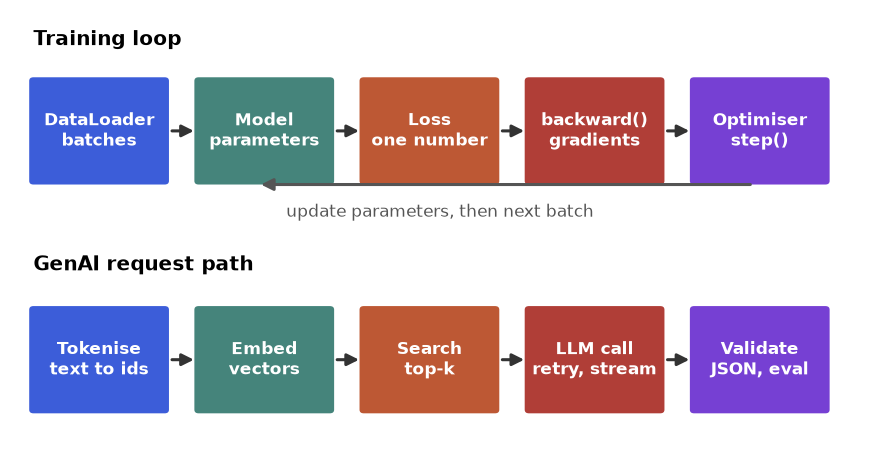
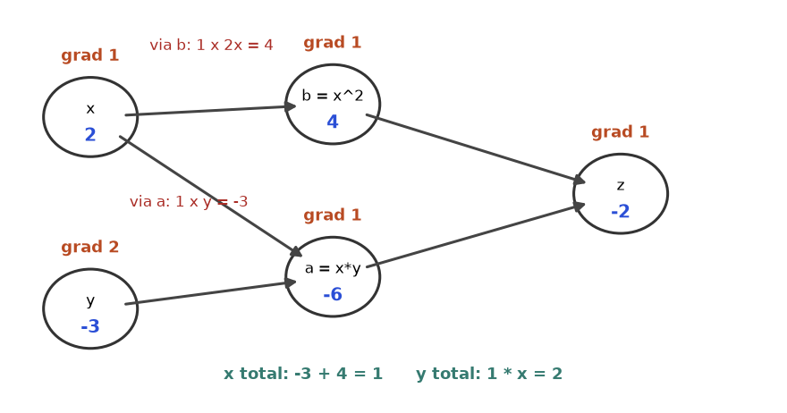
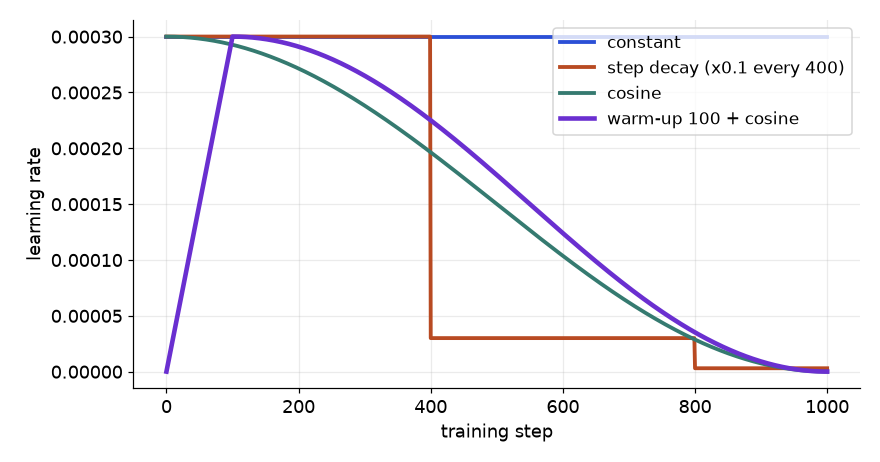
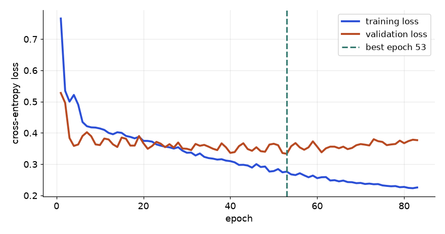
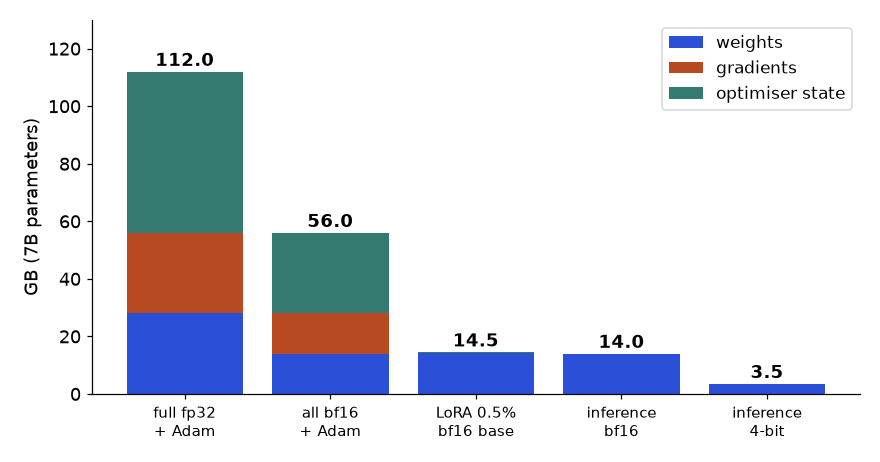
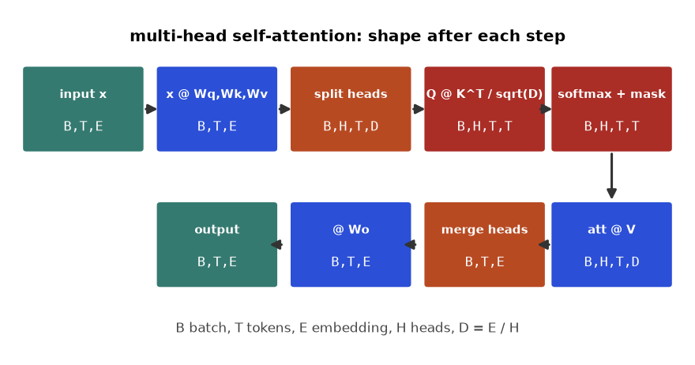
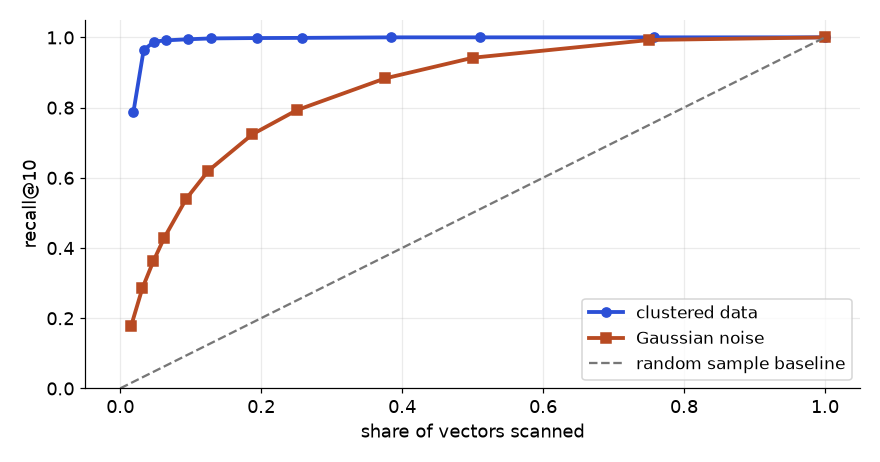
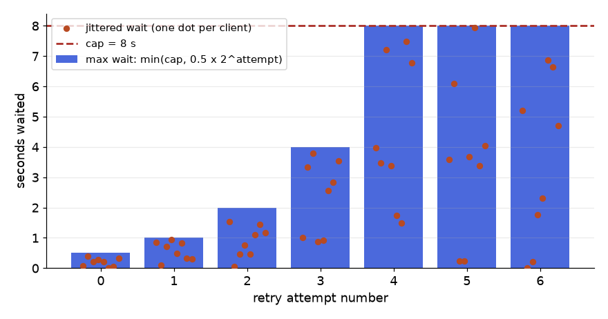

Imagine you join a software company's support team as the first data person. There are 40,000 old tickets in a spreadsheet and 300 new ones arrive every day. Your manager wants three things: (1) label each new ticket as billing, bug or how-to automatically, (2) show the agent the five most similar old tickets, and (3) draft a first reply with a large language model (LLM) and refuse to send it if it is not valid JSON. Each of those three wishes is a different library family. The labeller is a neural network trained with PyTorch, or a pretrained model fine-tuned with Hugging Face. The "similar tickets" feature is embeddings plus vector search (sentence-transformers, FAISS or Chroma). The reply drafter is an LLM SDK call wrapped in retries, streaming and output checks. Glue and measurement come from orchestration code and an evaluation harness.
This chapter is a handbook, not a theory course. For each library you get a reference table of the functions you will actually use, worked examples that climb from trivial to realistic, a list of traps, and a playbook for solving problems you have not seen. One practical difficulty shapes the whole chapter: torch, transformers, faiss and the vendor SDKs are not installed on the machine that produced this book, and some need a GPU or a network key anyway. So every library appears twice. First you see idiomatic code labelled not run here (it is the code you would paste into a real project, written from the documented APIs). Then you see a runnable equivalent built from NumPy, scikit-learn and the standard library that demonstrates the same mechanics, with real printed output. When a mechanism is understood by hand (autograd, an optimiser step, a retry loop, a nearest-neighbour search), the library call stops being magic.
By the end you will be able to: read and write a PyTorch training loop and know what every line does; debug shape, device and memory errors in a systematic way; tokenise text and explain what a Hugging Face Trainer does; build and evaluate a retrieval system; call an LLM API with retries, streaming and structured output; and judge whether your GenAI feature actually works with a small evaluation harness. For the maths behind gradients see the Maths document, Chapter 13 (backpropagation) and Chapter 14 (optimisation). For concepts such as attention and fine-tuning in depth, see the Deep Learning and GenAI documents. Here we focus on the libraries and the code.
Words you need. A tensor is an n-dimensional array that can also remember how it was computed. A gradient is the slope of the loss with respect to a number, telling you which way to nudge it. A token is a small piece of text (a word or part of a word) mapped to an integer id. An embedding is a list of numbers that places a piece of text (or an image) at a point in space so that similar things sit close together. An LLM is a very large model that continues text. Inference means using a trained model, training means changing it.
| Library | What it is | Use it when | Do NOT use it when |
|---|---|---|---|
PyTorch (torch) | Tensors with automatic differentiation, neural network building blocks, optimisers, GPU support | You train or fine-tune neural networks, or need custom losses and architectures | Tabular data with a few thousand rows: gradient boosting or logistic regression is usually faster, simpler and as accurate |
transformers | Pretrained models, tokenisers and a Trainer for text, vision and audio | You want a pretrained model for classification, extraction, generation or embeddings | A regex or a TF-IDF plus logistic regression already solves the task at the needed accuracy |
datasets | Memory-mapped, cached tables with fast map, filter and streaming | Data is too big for pandas RAM or you feed a Hugging Face model | The data fits in a pandas DataFrame and you only do analysis |
tokenizers | Fast tokeniser engine (Rust) behind transformers | You train your own vocabulary or need exact offsets | You use a standard pretrained model: load its own tokeniser instead |
peft | Parameter-efficient fine-tuning (LoRA and relatives) | The base model is too big to fine-tune fully on your hardware | The model is small enough to fine-tune fully, or prompting already works |
sentence-transformers | Models that turn sentences into embedding vectors | Semantic search, clustering, deduplication, retrieval for RAG | Exact keyword matches matter most (use BM25 or a database LIKE) |
| FAISS | Fast nearest-neighbour search over millions of vectors | Vectors live in memory and you need speed | Under about 100,000 vectors: a NumPy matrix product is enough |
| Chroma | A small vector database with metadata filters and persistence | Prototypes and small apps that need filtering plus storage | Large multi-user production search (use a managed vector store or pgvector) |
| OpenAI / Anthropic SDKs | Typed clients for hosted LLM APIs | You want a strong model without hosting it | Data may not leave your network, or the cost per call is too high at your volume |
| LangChain-style orchestration | Composable prompt, model, parser chains and agent loops | Many steps, several providers, tool calls | One prompt and one call: plain SDK code is clearer |
Install in a virtual environment (see Chapter 9). PyTorch has a choice of builds (CPU only, or a specific CUDA version), so copy the exact command from the selector on pytorch.org rather than guessing. Not run here:
# create and activate an environment first (Chapter 9)
python3 -m venv .venv && source .venv/bin/activate
pip install torch # use the command from pytorch.org for your CUDA/CPU build
pip install transformers datasets tokenizers peft accelerate
pip install sentence-transformers faiss-cpu chromadb
pip install openai anthropic langchain-core
python -c "import torch; print(torch.__version__, torch.cuda.is_available())"The conventional imports are below. Learn them: every tutorial and every colleague uses exactly these names.
import torch
import torch.nn as nn
import torch.nn.functional as F
from torch.utils.data import Dataset, DataLoader
from transformers import AutoTokenizer, AutoModelForSequenceClassification
from datasets import load_dataset
from peft import LoraConfig, get_peft_model
from sentence_transformers import SentenceTransformer
import faiss
import chromadb
from openai import OpenAI
import anthropicA version check that works whether or not a library exists is a handy first line in any bug report. This one runs here and reports honestly what the machine has:
import importlib.util
import importlib.metadata as md
def report(pairs):
for import_name, pip_name in pairs:
if importlib.util.find_spec(import_name) is None:
print(f"{import_name:14s} not installed")
else:
try:
print(f"{import_name:14s} {md.version(pip_name)}")
except md.PackageNotFoundError:
print(f"{import_name:14s} installed (no metadata)")
report([("torch", "torch"), ("transformers", "transformers"), ("faiss", "faiss-cpu"),
("openai", "openai"), ("anthropic", "anthropic"),
("numpy", "numpy"), ("sklearn", "scikit-learn")])torch not installed
transformers not installed
faiss not installed
openai not installed
anthropic not installed
numpy 2.5.3
sklearn 1.9.1find_spec asks Python whether an import would succeed without actually importing the (possibly slow) package. It returns None when the package is missing.md.version reads the version from the installed package metadata. This is the same number pip list shows.pip install scikit-learn but import sklearn, and faiss-cpu imports as faiss. So each pair holds both names, and we catch PackageNotFoundError in case the metadata is stored under another name.Every deep learning library is a variation on one loop. You hold parameters (numbers), you run data forward through a function to get a prediction, you compare it with the truth to get a single number called the loss, you compute the gradient of the loss with respect to each parameter (the backward pass), and an optimiser nudges the parameters. Repeat. The GenAI libraries add two more pictures: text becomes token ids then embeddings, and calling a hosted model is a network request that can fail, stream and return text that you must validate.

How to read it: follow the top row left to right for one training step; the arrow from the optimiser back to the model is the only place the model changes. In the bottom row nothing is trained: text is turned into numbers, the closest stored items are retrieved, and a hosted model writes the answer. Whenever you get lost in a library, ask "which box am I in?".
.backward() PyTorch walks the recipe backwards and fills in the slope of the loss for every number you marked as trainable. Think of a cooking show: the forward pass cooks the dish while writing the recipe, the backward pass reads the recipe in reverse to say how much each ingredient mattered.| Name | What it does in plain English | Minimal example (not run here) |
|---|---|---|
torch.tensor | Make a tensor from Python numbers (copies the data) | torch.tensor([[1., 2.], [3., 4.]]) |
torch.zeros / ones / full | Filled tensors of a given shape | torch.zeros(2, 3) |
torch.arange / linspace | Evenly spaced values | torch.arange(0, 10, 2) |
torch.manual_seed | Fix the random generator so runs repeat | torch.manual_seed(0) |
torch.randn / rand / randint | Random normal, uniform, integers | torch.randn(4, 3) |
torch.from_numpy / .numpy() | Share memory with a NumPy array (CPU only) | torch.from_numpy(arr) |
x.shape, x.dtype, x.device | The three facts to check first when anything breaks | print(x.shape, x.dtype, x.device) |
x.to(...) | Move to a device and/or change dtype | x.to("cuda"), x.to(torch.float16) |
x.view / x.reshape | Same numbers, new shape (view needs contiguous memory) | x.reshape(-1, 4) |
x.permute / x.transpose | Reorder dimensions (a view, often non-contiguous) | x.permute(0, 2, 1) |
x.unsqueeze / x.squeeze | Add or remove a length-1 dimension | x.unsqueeze(0) |
torch.cat / torch.stack | Join along an existing / a new dimension | torch.stack([a, b]) |
@ / torch.matmul | Matrix product, batched when there are leading dimensions | a @ b |
torch.einsum | Any product or reduction written as index letters | torch.einsum("bij,bjk->bik", a, b) |
x.sum / mean / max (dim, keepdim) | Reduce along a dimension | x.sum(dim=1, keepdim=True) |
x.argmax | Index of the largest value (turn logits into a class) | logits.argmax(dim=-1) |
torch.softmax | Turn scores into probabilities along a dimension | torch.softmax(z, dim=-1) |
torch.where / masked_fill | Choose elementwise / overwrite where a mask is true | x.masked_fill(mask, -1e9) |
x.gather | Pick one entry per row using index tensor | logp.gather(1, y.unsqueeze(1)) |
x.item() | One-element tensor to a Python number | loss.item() |
x.requires_grad_() | Start recording operations on this tensor | w = torch.randn(3, requires_grad=True) |
loss.backward() | Fill .grad for every tracked leaf | loss.backward(); w.grad |
torch.no_grad() | Stop recording (evaluation, inference) | with torch.no_grad(): y = model(x) |
x.detach() | Same data, cut from the graph | x.detach().cpu().numpy() |
x.clone() | Real copy (otherwise slices share memory) | y = x.clone() |
The names and ideas are the same as in NumPy, so we first practise the mechanics where we can run them. The first example covers shapes, dtypes, and the most important distinction in the whole chapter: a view shares memory, a copy does not.
Problem 21.2.1 Build a batch of 2 tickets, each with 3 tokens, each token a 4-number vector. Reshape it, take a slice, and prove whether the slice shares memory with the original.
| Idea | NumPy plays the part of torch: reshape, slicing and transposing return views; copy() returns new memory. PyTorch behaves the same way. |
|---|---|
| Check | np.shares_memory(a, b) answers the question directly. In PyTorch compare a.data_ptr() or a.untyped_storage().data_ptr(). |
import numpy as np
x = np.arange(24, dtype=np.float32).reshape(2, 3, 4) # (batch, tokens, features)
print("shape", x.shape, "dtype", x.dtype, "bytes", x.nbytes)
flat = x.reshape(6, 4) # merge batch and tokens
first_ticket = x[0] # a slice
copy = x[0].copy()
swapped = x.transpose(0, 2, 1) # (batch, features, tokens)
print("flat shares memory:", np.shares_memory(x, flat))
print("slice shares memory:", np.shares_memory(x, first_ticket))
print("copy shares memory:", np.shares_memory(x, copy))
print("transposed shape:", swapped.shape, "contiguous:", swapped.flags["C_CONTIGUOUS"])
first_ticket[0, 0] = 99.0 # write through the view
print("x[0,0,0] is now", x[0, 0, 0], "and copy[0,0] is still", copy[0, 0])shape (2, 3, 4) dtype float32 bytes 96
flat shares memory: True
slice shares memory: True
copy shares memory: False
transposed shape: (2, 4, 3) contiguous: False
x[0,0,0] is now 99.0 and copy[0,0] is still 0.0(2, 3, 4). Read shapes left to right as "2 tickets, 3 tokens, 4 features". float32 uses 4 bytes per number, so 24 numbers need 96 bytes.x. reshape and a slice are views. .copy() allocates new memory. transpose only changes how the same memory is walked (the strides), so it is also a view.shares_memory lines print True, True, False. A view costs nothing but is dangerous if you modify it.False). In PyTorch this is exactly the case where .view() raises an error and .reshape() or .contiguous() is needed.Now the PyTorch version of the same ideas. This is what you would run on a machine with torch installed (not run here):
import torch
torch.manual_seed(0)
x = torch.arange(24, dtype=torch.float32).reshape(2, 3, 4)
print(x.shape, x.dtype, x.device, x.element_size() * x.nelement())
flat = x.reshape(6, 4) # view when possible
copy = x[0].clone() # real copy
swapped = x.transpose(1, 2) # (2, 4, 3), non-contiguous
print(swapped.is_contiguous()) # False
try:
swapped.view(8, 3) # fails: view needs contiguous memory
except RuntimeError as e:
print("view failed:", str(e)[:60])
ok = swapped.reshape(8, 3) # reshape silently copies when it has to
ok2 = swapped.contiguous().view(8, 3)Broadcasting is the rule that lets arrays of different shapes combine. Line the shapes up from the right; two dimensions are compatible when they are equal or one of them is 1; a missing dimension counts as 1. It saves memory and loops, and it silently produces nonsense if you get a shape wrong, which is why the shape-debugging guide in 21.6 matters.
Problem 21.2.2 Scores for 3 tickets over 4 classes are given. Convert them to probabilities with a numerically safe softmax, using keepdims, and show why subtracting the row maximum matters.
| Formula | softmax(z)i = exp(zi) / sumj exp(zj). Subtracting any constant c from every zi leaves the answer unchanged. |
|---|---|
| Trap | exp(1000) overflows to infinity. Subtract the row maximum first so the largest exponent is exp(0) = 1. |
import numpy as np
z = np.array([[2.0, 1.0, 0.1, -1.0],
[1000.0, 999.0, 998.0, 0.0],
[0.0, 0.0, 0.0, 0.0]], dtype=np.float64)
def softmax_naive(z):
e = np.exp(z)
return e / e.sum(axis=1, keepdims=True)
def softmax_stable(z):
z = z - z.max(axis=1, keepdims=True) # (3,4) - (3,1) broadcasts
e = np.exp(z)
return e / e.sum(axis=1, keepdims=True)
with np.errstate(over="ignore", invalid="ignore"):
print("naive row 1:", softmax_naive(z)[1])
print("stable row 1:", np.round(softmax_stable(z)[1], 4))
p = softmax_stable(z)
print("rows sum to", p.sum(axis=1))
print("argmax per row:", p.argmax(axis=1))
print("uniform row:", p[2])naive row 1: [nan nan nan 0.]
stable row 1: [0.6652 0.2447 0.09 0. ]
rows sum to [1. 1. 1.]
argmax per row: [0 0 0]
uniform row: [0.25 0.25 0.25 0.25]z.max(axis=1, keepdims=True) has shape (3, 1). Without keepdims=True it would have shape (3,), and (3, 4) - (3,) would try to align 3 with 4 and fail (or worse, succeed with the wrong meaning when the sizes happen to match).exp(1000) is infinity and infinity divided by infinity is nan. The first printed line shows nan for the three large entries (the last entry, exp(0)/inf, becomes 0).[0, -1, -2, -1000].argmax picks class 0 for every row (on the all-zero row it is a tie and the first index wins), and that all-zero row becomes the uniform distribution 0.25 each. torch.softmax and F.cross_entropy do this subtraction for you internally; the lesson is never to write exp(z) / sum(exp(z)) yourself.Before trusting loss.backward(), build a tiny version. We create a scalar class Value that stores its number, its gradient, the values it came from, and a small function that pushes gradient back to those parents using the chain rule. This is a miniature of what PyTorch records in grad_fn.
Problem 21.2.3 Let z = x*y + x2 with x = 2 and y = -3. By hand: z = -6 + 4 = -2. dz/dx = y + 2x = -3 + 4 = 1 and dz/dy = x = 2. Verify with a hand-built autograd, then with a finite-difference check.
| Rule 1 | For c = a + b: dc/da = 1 and dc/db = 1, so each parent receives the child's gradient. |
|---|---|
| Rule 2 | For c = a * b: dc/da = b and dc/db = a, so a parent receives (child gradient) times (the other parent's value). |
| Rule 3 | If a variable is used twice (here x), its gradients from the two paths are added. This is why PyTorch accumulates into .grad. |
class Value:
def __init__(self, data, parents=()):
self.data = float(data)
self.grad = 0.0
self._parents = parents
self._backward = lambda: None
def __add__(self, other):
other = other if isinstance(other, Value) else Value(other)
out = Value(self.data + other.data, (self, other))
def _backward():
self.grad += out.grad
other.grad += out.grad
out._backward = _backward
return out
def __mul__(self, other):
other = other if isinstance(other, Value) else Value(other)
out = Value(self.data * other.data, (self, other))
def _backward():
self.grad += other.data * out.grad
other.grad += self.data * out.grad
out._backward = _backward
return out
def __pow__(self, k):
out = Value(self.data ** k, (self,))
def _backward():
self.grad += k * self.data ** (k - 1) * out.grad
out._backward = _backward
return out
def backward(self):
order, seen = [], set()
def visit(v):
if id(v) not in seen:
seen.add(id(v))
for p in v._parents:
visit(p)
order.append(v)
visit(self)
self.grad = 1.0
for v in reversed(order):
v._backward()
def f(xv, yv):
x, y = Value(xv), Value(yv)
z = x * y + x ** 2
return x, y, z
x, y, z = f(2.0, -3.0)
z.backward()
print("z =", z.data, " dz/dx =", x.grad, " dz/dy =", y.grad)
h = 1e-6
num_dx = (f(2.0 + h, -3.0)[2].data - f(2.0 - h, -3.0)[2].data) / (2 * h)
num_dy = (f(2.0, -3.0 + h)[2].data - f(2.0, -3.0 - h)[2].data) / (2 * h)
print("numeric dx, dy:", round(num_dx, 4), round(num_dy, 4))
z.backward() # call again without zeroing
print("after second backward, x.grad =", x.grad)z = -2.0 dz/dx = 1.0 dz/dy = 2.0
numeric dx, dy: 1.0 2.0
after second backward, x.grad = 3.0__add__, __mul__, __pow__) computes the forward number and stores a closure _backward that knows the local derivative. This is the recipe the cooking-show analogy described.+=, not =. Because x feeds two operations (the product and the square), it receives two contributions that must be added: y + 2x = -3 + 4 = 1.backward() first orders the nodes so that every node comes after its parents (a topological order), seeds the output gradient with 1.0 (the slope of z with respect to itself), then calls each closure from the output back to the inputs.h and measures the slope. It agrees to four decimals, which is the standard way to test any gradient code.backward() a second time without resetting adds to everything already stored, including the intermediate nodes, so x.grad becomes 3 instead of 1 (it is not even a clean doubling). This is the exact behaviour behind the famous bug "I forgot optimizer.zero_grad()".In PyTorch the same computation is three lines (not run here), and the two behaviours (accumulation and the graph being freed) are the ones that surprise newcomers:
import torch
x = torch.tensor(2.0, requires_grad=True)
y = torch.tensor(-3.0, requires_grad=True)
z = x * y + x ** 2
z.backward()
print(z.item(), x.grad.item(), y.grad.item()) # -2.0 1.0 2.0
# calling backward again on the SAME graph raises an error, because buffers were freed:
# RuntimeError: Trying to backward through the graph a second time ...
# Use z.backward(retain_graph=True) only if you truly need it.
# gradients ACCUMULATE across separate backward passes:
x.grad.zero_() # reset (optimizer.zero_grad() does this for all parameters)
(x ** 2).backward()
print(x.grad.item()) # 4.0
with torch.no_grad(): # nothing is recorded inside
w = x * 3
print(w.requires_grad) # False
v = (x * 3).detach() # cut a tensor out of the graphlosses.append(loss) in a loop. Symptom: memory grows every step, because each stored tensor keeps its entire graph alive. Fix: losses.append(loss.item()) (a plain Python float) or loss.detach().Real networks use vectors and matrices, so the backward formulas are matrix formulas. For a linear model ŷ = X w + b with mean squared error L = mean((ŷ - y)2), the gradients are dL/dw = (2/N) XT (ŷ - y) and dL/db = (2/N) sum(ŷ - y). We implement them, then check against numerical gradients, which is how you validate any custom layer.
import numpy as np
rng = np.random.default_rng(0)
N, D = 50, 3
X = rng.normal(size=(N, D))
true_w = np.array([2.0, -1.0, 0.5])
y = X @ true_w + 0.3 + rng.normal(scale=0.1, size=N)
def loss_fn(w, b):
err = X @ w + b - y
return np.mean(err ** 2)
def analytic_grads(w, b):
err = X @ w + b - y
return 2 / N * X.T @ err, 2 / N * err.sum()
def numeric_grads(w, b, h=1e-6):
gw = np.zeros_like(w)
for i in range(len(w)):
e = np.zeros_like(w); e[i] = h
gw[i] = (loss_fn(w + e, b) - loss_fn(w - e, b)) / (2 * h)
gb = (loss_fn(w, b + h) - loss_fn(w, b - h)) / (2 * h)
return gw, gb
w0, b0 = np.zeros(D), 0.0
gw, gb = analytic_grads(w0, b0)
nw, nb = numeric_grads(w0, b0)
print("analytic dw:", np.round(gw, 4), "db:", round(gb, 4))
print("numeric dw:", np.round(nw, 4), "db:", round(nb, 4))
print("match:", np.allclose(gw, nw, atol=1e-6) and abs(gb - nb) < 1e-6)analytic dw: [-4.941 1.0721 -1.4741] db: 0.0996
numeric dw: [-4.941 1.0721 -1.4741] db: 0.0996
match: Trueanalytic_grads is the formula you would code in a custom autograd function. Note X.T @ err: (D, N) @ (N,) gives shape (D,), one gradient per weight.numeric_grads nudges one weight at a time, which is slow (two forward passes per weight) but needs no calculus. This is the idea behind torch.autograd.gradcheck.w = 0 each gradient has the opposite sign to the true weight (negative for 2 and 0.5, positive for -1), so a step against the gradient moves each weight toward its true value. The two printed rows agree and match prints True.requires_grad=True, produce one scalar loss, and call backward(). It gives you three things back: .grad on each leaf, accumulation across calls, and a graph that is freed after use.
How to read it: start at the left with the inputs, follow the blue values to z = -2, then read the orange numbers from right to left. At x the two incoming gradients are y = -3 (through the product) and 2x = 4 (through the square); they add to 1.
nn.Module is the base class for neural network parts in PyTorch. A loss measures how wrong predictions are, an optimiser updates the weights using gradients, and a scheduler changes the learning rate during training.nn.Module is a labelled toolbox of parameters plus a recipe (forward) that uses them. The label part matters: when you assign a layer or a parameter as an attribute, the module registers it, so model.parameters() can hand every trainable number to the optimiser, state_dict() can save them, and .to("cuda") can move them. A layer stored in a plain Python list is invisible to all of that.| Name | What it does in plain English | Minimal example (not run here) |
|---|---|---|
nn.Module | Base class: registers parameters and sub-modules | class Net(nn.Module): ... |
nn.Linear(i, o) | Fully connected layer, y = xWT + b | nn.Linear(10, 4) |
nn.Sequential | Chain layers; output of one feeds the next | nn.Sequential(nn.Linear(4, 8), nn.ReLU()) |
nn.ReLU / GELU | Non-linearities; without them stacked layers collapse into one | nn.GELU() |
nn.Dropout(p) | Randomly zero values in training; identity in eval | nn.Dropout(0.1) |
nn.LayerNorm(d) | Normalise each sample's features (used in transformers) | nn.LayerNorm(768) |
nn.BatchNorm1d(d) | Normalise across the batch; has running statistics | nn.BatchNorm1d(64) |
nn.Embedding(n, d) | Lookup table from integer id to vector | nn.Embedding(30000, 128) |
nn.TransformerEncoderLayer | One attention + feed-forward block | nn.TransformerEncoderLayer(d_model=128, nhead=4, batch_first=True) |
model.parameters() | All trainable tensors (what the optimiser needs) | sum(p.numel() for p in model.parameters()) |
model.named_parameters() | Same, with names (inspect, freeze, group) | for n, p in model.named_parameters(): ... |
state_dict / load_state_dict | Dictionary of tensors; the portable way to save | model.load_state_dict(sd) |
model.train() / model.eval() | Switch dropout and batch-norm behaviour | model.eval() |
p.requires_grad_(False) | Freeze a parameter (transfer learning) | for p in base.parameters(): p.requires_grad_(False) |
nn.CrossEntropyLoss | Classification loss from raw logits and integer class ids | nn.CrossEntropyLoss()(logits, y) |
nn.BCEWithLogitsLoss | Binary / multi-label loss from raw logits | nn.BCEWithLogitsLoss(pos_weight=w) |
nn.MSELoss | Mean squared error for regression | nn.MSELoss()(pred, y) |
optim.SGD | Plain gradient step, optional momentum | optim.SGD(ps, lr=0.01, momentum=0.9) |
optim.Adam / AdamW | Adaptive step per parameter; AdamW decouples weight decay | optim.AdamW(ps, lr=3e-4, weight_decay=0.01) |
optimizer.zero_grad() | Clear gradients before the next backward | opt.zero_grad(set_to_none=True) |
optimizer.step() | Apply the update using .grad | opt.step() |
lr_scheduler.CosineAnnealingLR | Smoothly decay the learning rate | CosineAnnealingLR(opt, T_max=1000) |
lr_scheduler.OneCycleLR / LambdaLR | Warm-up then decay; or any custom rule | LambdaLR(opt, lambda s: min(1, s / 100)) |
clip_grad_norm_ | Rescale gradients so their total length is at most a limit | nn.utils.clip_grad_norm_(ps, 1.0) |
nn.init.* | Choose starting values for weights | nn.init.kaiming_normal_(w) |
First, the PyTorch way (not run here). The class below is a complete, idiomatic classifier. Read it once, then see the same mechanics built by hand.
import torch
import torch.nn as nn
class TicketNet(nn.Module):
def __init__(self, vocab_size, emb_dim=64, hidden=128, n_classes=3, p_drop=0.2):
super().__init__() # REQUIRED: sets up the registry
self.emb = nn.Embedding(vocab_size, emb_dim, padding_idx=0)
self.body = nn.Sequential(
nn.Linear(emb_dim, hidden),
nn.ReLU(),
nn.Dropout(p_drop),
nn.Linear(hidden, n_classes),
)
def forward(self, ids, mask):
# ids: (B, T) int64, mask: (B, T) with 1 for real tokens, 0 for padding
e = self.emb(ids) # (B, T, E)
m = mask.unsqueeze(-1).to(e.dtype) # (B, T, 1)
pooled = (e * m).sum(dim=1) / m.sum(dim=1).clamp(min=1) # mean over real tokens: (B, E)
return self.body(pooled) # logits: (B, n_classes)
model = TicketNet(vocab_size=5000)
print(sum(p.numel() for p in model.parameters())) # 5000*64 + (64*128+128) + (128*3+3) = 328707
for name, p in model.named_parameters():
print(name, tuple(p.shape)) # emb.weight (5000, 64), body.0.weight (128, 64), ...
loss_fn = nn.CrossEntropyLoss() # takes LOGITS, not probabilities
opt = torch.optim.AdamW(model.parameters(), lr=1e-3, weight_decay=0.01)The comment on the parameter count is an arithmetic check you can do yourself: embedding 5000 x 64 = 320,000; first linear 64 x 128 + 128 = 8,320; second linear 128 x 3 + 3 = 387; total 328,707. Counting parameters by hand before running is one of the best shape-debugging habits.
The registry trick is simple: intercept attribute assignment and file parameters and sub-modules into dictionaries. Below is a 40-line NumPy version with Linear, ReLU, Dropout and Sequential, including a hand-written backward pass.
Problem 21.3.1 Build Sequential(Linear(2,16), ReLU(), Linear(16,2)). List the named parameters, count them (by hand: 2*16 + 16 + 16*2 + 2 = 82) and verify one weight gradient numerically.
import numpy as np
class Parameter:
def __init__(self, data):
self.data = data
self.grad = np.zeros_like(data)
class Module:
def __init__(self):
object.__setattr__(self, "_params", {})
object.__setattr__(self, "_mods", {})
object.__setattr__(self, "training", True)
def __setattr__(self, name, value):
if isinstance(value, Parameter):
self._params[name] = value
elif isinstance(value, Module):
self._mods[name] = value
object.__setattr__(self, name, value)
def named_parameters(self, prefix=""):
for k, p in self._params.items():
yield prefix + k, p
for k, m in self._mods.items():
yield from m.named_parameters(prefix + k + ".")
def parameters(self):
return [p for _, p in self.named_parameters()]
def zero_grad(self):
for p in self.parameters():
p.grad[...] = 0.0
def train(self, mode=True):
object.__setattr__(self, "training", mode)
for m in self._mods.values():
m.train(mode)
return self
def eval(self):
return self.train(False)
class Linear(Module):
def __init__(self, n_in, n_out, rng):
super().__init__()
self.weight = Parameter(rng.normal(scale=np.sqrt(2 / n_in), size=(n_in, n_out)))
self.bias = Parameter(np.zeros(n_out))
def forward(self, x):
self.x = x
return x @ self.weight.data + self.bias.data
def backward(self, g):
self.weight.grad += self.x.T @ g
self.bias.grad += g.sum(axis=0)
return g @ self.weight.data.T
class ReLU(Module):
def forward(self, x):
self.mask = x > 0
return x * self.mask
def backward(self, g):
return g * self.mask
class Sequential(Module):
def __init__(self, *layers):
super().__init__()
for i, layer in enumerate(layers):
setattr(self, str(i), layer)
self.layers = layers
def forward(self, x):
for layer in self.layers:
x = layer.forward(x)
return x
def backward(self, g):
for layer in reversed(self.layers):
g = layer.backward(g)
return g
rng = np.random.default_rng(1)
model = Sequential(Linear(2, 16, rng), ReLU(), Linear(16, 2, rng))
for name, p in model.named_parameters():
print(f"{name:10s} {p.data.shape}")
print("total parameters:", sum(p.data.size for p in model.parameters()))
x = rng.normal(size=(5, 2))
out = model.forward(x)
print("output shape:", out.shape)
model.zero_grad()
model.backward(np.ones_like(out)) # gradient of sum(out) w.r.t. out is 1
analytic = model.layers[0].weight.grad[0, 0]
w = model.layers[0].weight.data
h = 1e-6
w[0, 0] += h; up = model.forward(x).sum()
w[0, 0] -= 2 * h; down = model.forward(x).sum()
w[0, 0] += h
print("analytic vs numeric:", round(analytic, 5), round((up - down) / (2 * h), 5))0.weight (2, 16)
0.bias (16,)
2.weight (16, 2)
2.bias (2,)
total parameters: 82
output shape: (5, 2)
analytic vs numeric: 0.97713 0.97713Parameter pairs a number array with a same-shaped gradient array. In PyTorch a Parameter is a tensor flagged as trainable.Module.__setattr__ is the whole registry: when you write self.weight = Parameter(...) it files the object into _params; when you assign a sub-module it files it into _mods. named_parameters walks both, producing dotted names like 0.weight.Linear.forward remembers its input because the backward pass needs it: dW = xT g. The bias gradient is the column sum of g, and the gradient passed to the previous layer is g WT. These are the same formulas as in 21.2.Sequential registers its layers under the names "0", "1", "2", which is exactly why PyTorch parameter names look like body.0.weight. It then runs forward in order and backward in reverse order.train() and eval() only set a flag on every sub-module. They change nothing by themselves; layers like dropout read the flag.self.layers = [nn.Linear(4, 4) for _ in range(3)] inside an nn.Module. Symptom: model.parameters() is empty (or misses the layers), the optimiser trains nothing, the loss never moves, and .to("cuda") leaves the layers on the CPU. Fix: nn.ModuleList([...]) or nn.Sequential(...), which register their contents. The registry above shows why: only attributes that are Module or Parameter objects are filed.Dropout randomly zeroes a fraction p of the values while training and scales the survivors by 1/(1-p) so the average stays the same ("inverted dropout"). At evaluation it must do nothing. Forgetting model.eval() is the single most common reason for predictions that change between two identical calls.
import numpy as np
rng = np.random.default_rng(0)
def dropout(x, p, training, rng):
if not training or p == 0:
return x
keep = rng.random(x.shape) >= p
return x * keep / (1 - p)
x = np.ones((1, 10))
print("train call 1:", dropout(x, 0.5, True, rng))
print("train call 2:", dropout(x, 0.5, True, rng))
print("eval call 1:", dropout(x, 0.5, False, rng))
big = np.ones((10000, 1))
print("train mean over 10000 values:", round(dropout(big, 0.3, True, rng).mean(), 3))train call 1: [[2. 0. 0. 0. 2. 2. 2. 2. 2. 2.]]
train call 2: [[2. 0. 2. 0. 2. 0. 2. 2. 0. 0.]]
eval call 1: [[1. 1. 1. 1. 1. 1. 1. 1. 1. 1.]]
train mean over 10000 values: 0.999rng.random(shape) >= p keeps each value with probability 1-p. Dividing by 1-p keeps survivors at 2.0 when p = 0.5.Classification losses in PyTorch (CrossEntropyLoss, BCEWithLogitsLoss) expect raw scores (logits), not probabilities, because they fuse the softmax and the logarithm using the log-sum-exp trick: log softmax(z)y = zy - log sum exp(z). The gradient of the cross-entropy with respect to the logits has a famously simple form: softmax(z) minus the one-hot label.
Problem 21.3.2 For logits z = [2.0, 0.5, -1.0] and true class 0, compute the cross-entropy by hand: softmax = [0.7856, 0.1753, 0.0391] (approximately), so the loss is -log 0.7856 = 0.2413 and the gradient is [0.7856 - 1, 0.1753, 0.0391] = [-0.2144, 0.1753, 0.0391]. Verify, and show what happens to a naive loss with huge logits.
import numpy as np
def cross_entropy_from_logits(z, y):
z = z - z.max(axis=1, keepdims=True)
log_probs = z - np.log(np.exp(z).sum(axis=1, keepdims=True))
return -log_probs[np.arange(len(y)), y].mean()
def naive_cross_entropy(z, y):
p = np.exp(z) / np.exp(z).sum(axis=1, keepdims=True)
return -np.log(p[np.arange(len(y)), y]).mean()
z = np.array([[2.0, 0.5, -1.0]])
y = np.array([0])
p = np.exp(z) / np.exp(z).sum()
print("softmax:", np.round(p, 4))
print("loss:", round(cross_entropy_from_logits(z, y), 4))
print("gradient wrt logits:", np.round(p - np.eye(3)[y], 4))
huge = np.array([[1000.0, 0.0, -5.0]])
with np.errstate(all="ignore"):
print("naive on huge logits:", naive_cross_entropy(huge, y))
print("stable on huge logits:", cross_entropy_from_logits(huge, y) + 0.0)
# binary version with logits: log(1 + exp(-t*z)) written stably
def bce_with_logits(z, t):
return np.mean(np.maximum(z, 0) - z * t + np.log1p(np.exp(-np.abs(z))))
print("BCE:", round(bce_with_logits(np.array([2.0, -1.0, 0.5]), np.array([1.0, 0.0, 1.0])), 4))softmax: [[0.7856 0.1753 0.0391]]
loss: 0.2413
gradient wrt logits: [[-0.2144 0.1753 0.0391]]
naive on huge logits: nan
stable on huge logits: 0.0
BCE: 0.3048z - log(sum(exp(z))). This is what F.log_softmax does and is why CrossEntropyLoss accepts logits.log_probs[np.arange(len(y)), y] picks, for each row, the log-probability of its true class. In PyTorch the same pick is gather or nll_loss.p - onehot, matching the hand calculation: the true class is pushed up (negative gradient means increase), the others pushed down.nan, while the stable one returns 0.0 (the model is certain and right; we add 0.0 only to avoid printing a negative zero).bce_with_logits uses the rewrite max(z,0) - z*t + log(1 + exp(-|z|)), which never overflows. That is the formula inside BCEWithLogitsLoss.nn.CrossEntropyLoss()(torch.softmax(logits, -1), y). Symptom: training works but plateaus at a poor accuracy and the loss looks oddly small, because softmax is applied twice. Fix: pass raw logits. Apply softmax only when you want probabilities to show a user.An optimiser takes the gradient and decides the step. SGD subtracts lr times the gradient. Momentum keeps a running velocity so steps in a consistent direction speed up and zig-zags cancel. Adam keeps running averages of the gradient (m) and of its square (v) and divides one by the root of the other, giving every parameter its own step size. With bias correction the update is: m̂ = m/(1 - β1t), v̂ = v/(1 - β2t), w -= lr * m̂ / (√v̂ + ε).
Problem 21.3.3 Minimise the stretched bowl f(x, y) = 0.5 * (x2 + 100 y2) starting at (5, 5). The gradient is (x, 100 y). Compare plain SGD, momentum and Adam after 100 steps. SGD needs lr below 2/100 = 0.02 to stay stable in the steep y direction, which makes it crawl along the shallow x direction.
import numpy as np
def f(w):
return 0.5 * (w[0] ** 2 + 100 * w[1] ** 2)
def grad(w):
return np.array([w[0], 100 * w[1]])
def run(step_fn, steps=100):
w = np.array([5.0, 5.0])
state = {}
for t in range(1, steps + 1):
w = step_fn(w, grad(w), state, t)
return f(w)
def sgd(lr):
def step(w, g, s, t):
return w - lr * g
return step
def momentum(lr, beta=0.9):
def step(w, g, s, t):
s["v"] = beta * s.get("v", 0) + g
return w - lr * s["v"]
return step
def adam(lr, b1=0.9, b2=0.999, eps=1e-8):
def step(w, g, s, t):
s["m"] = b1 * s.get("m", 0) + (1 - b1) * g
s["v"] = b2 * s.get("v", 0) + (1 - b2) * g ** 2
mh = s["m"] / (1 - b1 ** t)
vh = s["v"] / (1 - b2 ** t)
return w - lr * mh / (np.sqrt(vh) + eps)
return step
print("start loss:", f(np.array([5.0, 5.0])))
print("SGD lr=0.019 :", round(run(sgd(0.019)), 6))
print("SGD lr=0.021 (too big):", f"{run(sgd(0.021)):.3e}")
print("momentum lr=0.01 :", round(run(momentum(0.01)), 6))
print("Adam lr=0.3 :", round(run(adam(0.3)), 6))start loss: 1262.5
SGD lr=0.019 : 0.269596
SGD lr=0.021 (too big): 2.374e+11
momentum lr=0.01 : 0.002365
Adam lr=0.3 : 0.023447lr = 0.019 is just stable for y (the factor 1 - 100*0.019 = -0.9 shrinks it by 0.9 each step with a sign flip) but x only shrinks by 0.981 per step, so after 100 steps x is still about 5 * 0.981100 = 0.73 and the loss is about 0.27.lr = 0.021 the y factor is 1 - 2.1 = -1.1, so |y| grows 10 percent every step and the loss explodes (printed in scientific notation). That is the classic divergence symptom: a loss that goes to inf then nan.A common recipe for transformers is warm-up then cosine decay: increase the rate linearly from zero for the first few percent of steps (the early gradients are noisy and Adam's statistics are still unreliable), then decay smoothly toward a small floor. In PyTorch you express it with LambdaLR or use get_cosine_schedule_with_warmup from transformers. Gradient clipping rescales all gradients together if their combined length exceeds a limit, which prevents one bad batch from wrecking the weights.
import numpy as np
def lr_at(step, total, warmup, peak, floor=0.0):
if step < warmup:
return peak * step / warmup
prog = (step - warmup) / max(1, total - warmup)
return floor + 0.5 * (peak - floor) * (1 + np.cos(np.pi * prog))
for s in [0, 50, 100, 300, 550, 1000]:
print(f"step {s:4d} lr {lr_at(s, 1000, 100, 3e-4):.2e}")
def clip_grad_norm(grads, max_norm):
total = np.sqrt(sum((g ** 2).sum() for g in grads))
scale = min(1.0, max_norm / (total + 1e-6))
return [g * scale for g in grads], total
grads = [np.array([3.0, 4.0]), np.array([12.0])] # global norm = sqrt(9+16+144) = 13
clipped, before = clip_grad_norm(grads, 1.0)
after = np.sqrt(sum((g ** 2).sum() for g in clipped))
print("norm before:", round(before, 3), "after:", round(after, 3))
print("direction kept:", np.round(clipped[0] / np.linalg.norm(clipped[0]), 3), "= [0.6, 0.8]")step 0 lr 0.00e+00
step 50 lr 1.50e-04
step 100 lr 3.00e-04
step 300 lr 2.65e-04
step 550 lr 1.50e-04
step 1000 lr 0.00e+00
norm before: 13.0 after: 1.0
direction kept: [0.6 0.8] = [0.6, 0.8]lr_at has two phases. Before warmup steps the rate is a straight line from 0 to the peak. After that, prog goes from 0 to 1 and the cosine term goes from 1 to -1, so the rate moves from the peak to the floor along a smooth S curve.clip_grad_norm computes the global norm across all gradient tensors (13 here), then multiplies every gradient by max_norm / total. The relative direction of the update is unchanged; only its length shrinks to 1.backward() and before step(): torch.nn.utils.clip_grad_norm_(model.parameters(), 1.0). It also returns the pre-clip norm, which is a useful number to log.
How to read it: the vertical axis is the learning rate and the horizontal axis is the training step. The purple warm-up curve rises for 100 steps and then follows a cosine down to zero; the step schedule drops by a factor of 10 at fixed moments; constant never changes. Large rates early explore quickly, small rates late settle into a minimum.
The PyTorch equivalents (not run here):
import torch
from torch.optim.lr_scheduler import LambdaLR, CosineAnnealingLR, OneCycleLR
opt = torch.optim.AdamW(model.parameters(), lr=3e-4, weight_decay=0.01)
# 1) warm-up then cosine using LambdaLR (the lambda returns a MULTIPLIER of the base lr)
import math
total, warm = 1000, 100
def mult(step):
if step < warm:
return step / warm
prog = (step - warm) / (total - warm)
return 0.5 * (1 + math.cos(math.pi * prog))
sched = LambdaLR(opt, lr_lambda=mult)
# 2) param groups: different learning rates (or no weight decay on biases and norms)
decay = [p for n, p in model.named_parameters() if p.ndim >= 2]
no_decay = [p for n, p in model.named_parameters() if p.ndim < 2]
opt = torch.optim.AdamW([{"params": decay, "weight_decay": 0.01},
{"params": no_decay, "weight_decay": 0.0}], lr=3e-4)
# inside the training loop, the ORDER matters:
# opt.zero_grad(); loss.backward(); clip_grad_norm_(...); opt.step(); sched.step()
print(opt.param_groups[0]["lr"]) # inspect the current learning rateDataset gives access to individual samples, and a DataLoader groups them into batches. The training loop repeats the steps of predicting, computing loss, back-propagating and updating weights, and a trained model can be saved to disk and loaded later.Dataset answers "give me item number i". The DataLoader is a waiter: it decides the order (shuffling), collects items into trays (batches), and uses a collate function to stack uneven items into one rectangular tensor. The training loop is the kitchen routine: for each tray, predict, measure the error, clear old gradients, backpropagate, step. Once you can write that routine from memory you can debug any framework built on it, including the Hugging Face Trainer.| Name | What it does in plain English | Minimal example (not run here) |
|---|---|---|
Dataset | Your class with __len__ and __getitem__ | def __getitem__(self, i): return self.x[i], self.y[i] |
TensorDataset | Wrap tensors that share the first dimension | TensorDataset(X, y) |
IterableDataset | Stream items without random access (huge files) | class Stream(IterableDataset): def __iter__(self): ... |
DataLoader | Batches, shuffles and (optionally) parallelises loading | DataLoader(ds, batch_size=32, shuffle=True) |
shuffle=True | New random order each epoch (train only) | DataLoader(train, shuffle=True) |
num_workers | Background processes that prepare batches | DataLoader(ds, num_workers=4) |
pin_memory=True | Page-locked host memory for faster GPU copies | DataLoader(ds, pin_memory=True) |
drop_last=True | Discard the final short batch | DataLoader(ds, drop_last=True) |
collate_fn | Your function that merges a list of items into a batch | DataLoader(ds, collate_fn=pad_collate) |
random_split | Split a dataset into train/validation parts | random_split(ds, [0.8, 0.2], generator=g) |
WeightedRandomSampler | Oversample rare classes | DataLoader(ds, sampler=sampler) |
pad_sequence | Pad a list of tensors to equal length | pad_sequence(seqs, batch_first=True) |
model.train() / eval() | Switch layer behaviour | model.eval() |
torch.no_grad() / inference_mode() | Skip graph building in evaluation | with torch.inference_mode(): ... |
loss.backward() | Compute gradients | loss.backward() |
torch.save | Write a checkpoint (use a dict of state_dicts) | torch.save({"model": m.state_dict()}, "ck.pt") |
torch.load(weights_only=True) | Read it back safely (never load untrusted pickles) | torch.load("ck.pt", map_location="cpu", weights_only=True) |
load_state_dict(strict) | Copy tensors into a model; strict=False reports mismatches | model.load_state_dict(sd) |
torch.manual_seed | Reproducible init and shuffling | torch.manual_seed(42) |
worker_init_fn / generator | Seed each loader worker and the shuffle order | DataLoader(ds, generator=g) |
SummaryWriter | Log scalars for TensorBoard | writer.add_scalar("loss", v, step) |
Sentences have different lengths, but a tensor must be rectangular. The collate function pads short sequences with a pad id (0 here) and builds a mask that is 1 for real tokens and 0 for padding, so the model can ignore the padding. This is the single most common reason a hand-written DataLoader breaks ("expected sequence of length 5 at dim 1 (got 3)").
Problem 21.4.1 Seven tickets are lists of token ids with lengths 3, 5, 2, 4, 6, 2, 3. Batch them in threes without shuffling, then with drop_last, and show the padded matrix and mask for the first batch.
import numpy as np
class TicketDataset:
def __init__(self, seqs, labels):
self.seqs, self.labels = seqs, labels
def __len__(self):
return len(self.seqs)
def __getitem__(self, i):
return self.seqs[i], self.labels[i]
def pad_collate(items, pad_id=0):
seqs, labels = zip(*items)
longest = max(len(s) for s in seqs)
ids = np.full((len(seqs), longest), pad_id, dtype=np.int64)
mask = np.zeros((len(seqs), longest), dtype=np.int64)
for r, s in enumerate(seqs):
ids[r, :len(s)] = s
mask[r, :len(s)] = 1
return ids, mask, np.array(labels, dtype=np.int64)
class DataLoader:
def __init__(self, ds, batch_size, shuffle=False, drop_last=False, collate_fn=pad_collate, seed=0):
self.ds, self.bs, self.shuffle = ds, batch_size, shuffle
self.drop_last, self.collate, self.rng = drop_last, collate_fn, np.random.default_rng(seed)
def __len__(self):
n = len(self.ds)
return n // self.bs if self.drop_last else -(-n // self.bs)
def __iter__(self):
order = self.rng.permutation(len(self.ds)) if self.shuffle else np.arange(len(self.ds))
for start in range(0, len(order), self.bs):
idx = order[start:start + self.bs]
if self.drop_last and len(idx) < self.bs:
break
yield self.collate([self.ds[int(i)] for i in idx])
seqs = [[5, 6, 7], [8, 9, 10, 11, 12], [13, 14], [15, 16, 17, 18], [19, 20, 21, 22, 23, 24], [25, 26], [27, 28, 29]]
ds = TicketDataset(seqs, [0, 1, 2, 0, 1, 2, 0])
dl = DataLoader(ds, batch_size=3)
print("batches:", len(dl), "| with drop_last:", len(DataLoader(ds, 3, drop_last=True)))
for ids, mask, y in dl:
print("ids", ids.shape, "mask", mask.shape, "labels", y)
ids, mask, y = next(iter(dl))
print(ids)
print(mask)
first = [int(y.sum()) for _, _, y in DataLoader(ds, 3, shuffle=True, seed=1)]
print("shuffled label sums per batch:", first)batches: 3 | with drop_last: 2
ids (3, 5) mask (3, 5) labels [0 1 2]
ids (3, 6) mask (3, 6) labels [0 1 2]
ids (1, 3) mask (1, 3) labels [0]
[[ 5 6 7 0 0]
[ 8 9 10 11 12]
[13 14 0 0 0]]
[[1 1 1 0 0]
[1 1 1 1 1]
[1 1 0 0 0]]
shuffled label sums per batch: [3, 3, 0]TicketDataset follows the PyTorch contract: __len__ says how many items exist and __getitem__ returns one item. Nothing is loaded until asked, which is how a Dataset can wrap a million files.pad_collate receives a list of items from __getitem__. It finds the longest sequence in this batch only, allocates a rectangle filled with the pad id, copies each sequence into its row, and sets the mask to 1 on real positions. Padding to the batch maximum, not the global maximum, saves compute.__len__ uses ceiling division: 7 items in batches of 3 give 3 batches (3, 3 and 1). With drop_last the short last batch is discarded, giving 2.(3, 5), (3, 6) and (1, 3): the second dimension changes per batch, because lengths differ. A model must therefore accept any sequence length.shuffle=True the permutation changes the batch contents. The seed makes the order repeatable; in PyTorch pass generator=torch.Generator().manual_seed(1).The PyTorch version (not run here). The real DataLoader adds workers, pinned memory and many more safety checks, but the collate idea is identical:
import torch
from torch.utils.data import Dataset, DataLoader
from torch.nn.utils.rnn import pad_sequence
class TicketDataset(Dataset):
def __init__(self, seqs, labels):
self.seqs, self.labels = seqs, labels
def __len__(self):
return len(self.seqs)
def __getitem__(self, i):
return torch.tensor(self.seqs[i]), self.labels[i]
def pad_collate(items):
seqs, labels = zip(*items)
ids = pad_sequence(seqs, batch_first=True, padding_value=0) # (B, T_max)
mask = (ids != 0).long()
return ids, mask, torch.tensor(labels)
g = torch.Generator().manual_seed(0)
train_dl = DataLoader(TicketDataset(seqs, labels), batch_size=32, shuffle=True,
collate_fn=pad_collate, num_workers=2, pin_memory=True,
drop_last=False, generator=g)shuffle=True on the validation loader and, on the training loader, forgetting it. Symptom: training on sorted or grouped data (all class 0 first, then class 1) makes the loss oscillate wildly and the model memorise the last class it saw; a shuffled validation loader is harmless but wasteful and makes batch-by-batch logs impossible to compare. Fix: shuffle training only.Now the full routine in a form you can compare line by line with PyTorch: mini-batches, an Adam optimiser, a validation pass without gradient tracking, early stopping (stop when validation loss has not improved for 30 epochs), and keeping the best weights. We deliberately use a tiny training set (60 points) and a wide hidden layer so the model overfits and you can watch it happen.
Problem 21.4.2 Train a 2-64-2 network on 60 noisy "two moons" points, validate on 340 others, stop early, then save and reload the best checkpoint and confirm identical predictions.
import numpy as np, tempfile, os
from sklearn.datasets import make_moons
X, y = make_moons(n_samples=400, noise=0.35, random_state=0)
X = (X - X.mean(0)) / X.std(0)
Xtr, ytr, Xva, yva = X[:60], y[:60], X[60:], y[60:]
class MLP:
def __init__(self, sizes, rng):
self.W = [rng.normal(scale=np.sqrt(2 / a), size=(a, b)) for a, b in zip(sizes[:-1], sizes[1:])]
self.b = [np.zeros(b) for b in sizes[1:]]
def params(self):
return self.W + self.b
def forward(self, x):
self.acts = [x]
for i, (W, b) in enumerate(zip(self.W, self.b)):
x = x @ W + b
if i < len(self.W) - 1:
x = np.maximum(x, 0)
self.acts.append(x)
return x
def backward(self, g):
gW, gb = [None] * len(self.W), [None] * len(self.W)
for i in reversed(range(len(self.W))):
gW[i] = self.acts[i].T @ g
gb[i] = g.sum(0)
if i > 0:
g = (g @ self.W[i].T) * (self.acts[i] > 0)
return gW + gb
class Adam:
def __init__(self, params, lr=0.01, b1=0.9, b2=0.999, eps=1e-8):
self.p, self.lr, self.b1, self.b2, self.eps, self.t = params, lr, b1, b2, eps, 0
self.m = [np.zeros_like(q) for q in params]
self.v = [np.zeros_like(q) for q in params]
def step(self, grads):
self.t += 1
for q, g, m, v in zip(self.p, grads, self.m, self.v):
m *= self.b1; m += (1 - self.b1) * g
v *= self.b2; v += (1 - self.b2) * g * g
q -= self.lr * (m / (1 - self.b1 ** self.t)) / (np.sqrt(v / (1 - self.b2 ** self.t)) + self.eps)
def ce_loss_grad(logits, y):
z = logits - logits.max(1, keepdims=True)
p = np.exp(z); p /= p.sum(1, keepdims=True)
loss = -np.log(p[np.arange(len(y)), y]).mean()
p[np.arange(len(y)), y] -= 1
return loss, p / len(y)
def evaluate(model, X, y): # like model.eval() + torch.no_grad()
logits = model.forward(X)
loss, _ = ce_loss_grad(logits, y)
return loss, (logits.argmax(1) == y).mean()
rng = np.random.default_rng(0)
model = MLP([2, 64, 2], rng)
opt = Adam(model.params(), lr=0.01)
best_loss, best_state, best_epoch, bad = 1e9, None, -1, 0
for epoch in range(1, 301):
order = rng.permutation(len(Xtr))
total = 0.0
for i in range(0, len(order), 16):
idx = order[i:i + 16]
logits = model.forward(Xtr[idx]) # forward
loss, g = ce_loss_grad(logits, ytr[idx]) # loss
grads = model.backward(g) # backward
opt.step(grads) # optimiser step
total += loss * len(idx)
val_loss, val_acc = evaluate(model, Xva, yva)
if val_loss < best_loss - 1e-4:
best_loss, best_epoch, bad = val_loss, epoch, 0
best_state = [q.copy() for q in model.params()]
else:
bad += 1
if epoch % 20 == 0:
print(f"epoch {epoch:3d} train {total/len(Xtr):.4f} val {val_loss:.4f} acc {val_acc:.3f}")
if bad >= 30:
print(f"early stop at epoch {epoch}; best epoch {best_epoch} (val loss {best_loss:.4f})")
break
path = os.path.join(tempfile.mkdtemp(), "best.npz")
np.savez(path, *best_state) # like torch.save(state_dict)
fresh = MLP([2, 64, 2], np.random.default_rng(99)) # different random init
loaded = np.load(path)
for q, key in zip(fresh.params(), loaded.files):
q[...] = loaded[key] # like load_state_dict
for q, s in zip(model.params(), best_state):
q[...] = s
print("reloaded predictions identical:", np.array_equal(fresh.forward(Xva), model.forward(Xva)))
print("final val accuracy of best model:", round(evaluate(fresh, Xva, yva)[1], 3))epoch 20 train 0.3745 val 0.3671 acc 0.847
epoch 40 train 0.3097 val 0.3361 acc 0.862
epoch 60 train 0.2553 val 0.3559 acc 0.847
epoch 80 train 0.2272 val 0.3671 acc 0.847
early stop at epoch 83; best epoch 53 (val loss 0.3332)
reloaded predictions identical: True
final val accuracy of best model: 0.865MLP keeps the layer inputs in self.acts during forward because the backward pass needs them. This is the memory PyTorch calls activations, and it is why training uses far more memory than inference (see 21.5).opt.zero_grad(); here the gradients are fresh arrays each time, so there is nothing to clear.(softmax - onehot) / batch, which is what loss.backward() would start the chain with.evaluate never calls backward or the optimiser, the equivalent of model.eval() plus torch.no_grad().q.copy(); without the copy the saved weights would silently keep changing because they are views of the live parameters).True: the checkpoint fully determines the model.
How to read it: the blue training curve only goes down, because the network can memorise 60 points. The orange validation curve bottoms out and climbs: from that point extra training makes the model worse on new data. The gap between the curves is the generalisation gap.
The same loop in PyTorch (not run here). Compare it line by line with the NumPy version:
import copy, torch
import torch.nn as nn
device = "cuda" if torch.cuda.is_available() else "cpu"
model = TicketNet(vocab_size=5000).to(device)
loss_fn = nn.CrossEntropyLoss()
opt = torch.optim.AdamW(model.parameters(), lr=1e-3, weight_decay=0.01)
@torch.no_grad()
def evaluate(model, loader):
model.eval()
total, correct, n = 0.0, 0, 0
for ids, mask, y in loader:
ids, mask, y = ids.to(device), mask.to(device), y.to(device)
logits = model(ids, mask)
total += loss_fn(logits, y).item() * len(y)
correct += (logits.argmax(dim=-1) == y).sum().item()
n += len(y)
return total / n, correct / n
best_loss, best_state, bad = float("inf"), None, 0
for epoch in range(100):
model.train()
for ids, mask, y in train_dl:
ids, mask, y = ids.to(device), mask.to(device), y.to(device)
opt.zero_grad(set_to_none=True)
loss = loss_fn(model(ids, mask), y)
loss.backward()
torch.nn.utils.clip_grad_norm_(model.parameters(), 1.0)
opt.step()
val_loss, val_acc = evaluate(model, val_dl)
if val_loss < best_loss - 1e-4:
best_loss, bad = val_loss, 0
best_state = copy.deepcopy(model.state_dict()) # deepcopy, or it keeps changing
else:
bad += 1
if bad >= 5:
break
model.load_state_dict(best_state)
torch.save({"model": model.state_dict(), "epoch": epoch, "val_loss": best_loss}, "best.pt")
# later, in another process (weights_only=True is the safe default in recent versions):
ckpt = torch.load("best.pt", map_location="cpu", weights_only=True)
new_model = TicketNet(vocab_size=5000)
new_model.load_state_dict(ckpt["model"])
new_model.eval()| Name | What it does in plain English | Minimal example (not run here) |
|---|---|---|
torch.cuda.is_available() | Is an NVIDIA GPU usable? | torch.cuda.is_available() |
torch.backends.mps.is_available() | Is the Apple-silicon GPU usable? | torch.backends.mps.is_available() |
torch.device | A device handle | torch.device("cuda:0") |
model.to(device) | Move all parameters in place | model.to(device) |
x.to(device, non_blocking=True) | Copy a tensor (returns a new tensor) | x = x.to(device) |
x.cpu() / x.cuda() | Shortcuts for moving | x.cpu().numpy() |
torch.cuda.memory_allocated() | Bytes held by live tensors | torch.cuda.memory_allocated() / 1e9 |
torch.cuda.max_memory_allocated() | Peak bytes since last reset | log it once per epoch |
torch.cuda.memory_summary() | Readable report for OOM debugging | print(torch.cuda.memory_summary()) |
torch.cuda.empty_cache() | Return cached blocks to the driver (rarely helps) | torch.cuda.empty_cache() |
torch.autocast | Run matmuls in lower precision automatically | with torch.autocast("cuda", dtype=torch.bfloat16): ... |
torch.amp.GradScaler | Scale the loss so float16 gradients do not underflow | scaler = torch.amp.GradScaler() |
torch.utils.checkpoint | Trade compute for memory by recomputing activations | checkpoint(block, x, use_reentrant=False) |
torch.inference_mode() | Fastest no-gradient mode for serving | with torch.inference_mode(): ... |
model.half() / .to(torch.bfloat16) | Cast weights to 16 bits | model.to(torch.bfloat16) |
CUDA_VISIBLE_DEVICES | Environment variable that hides other GPUs | CUDA_VISIBLE_DEVICES=1 python train.py |
The standard device boilerplate (not run here). Pick the device once, put it in one variable, and move the model once and every batch each step:
import torch
if torch.cuda.is_available():
device = torch.device("cuda")
elif torch.backends.mps.is_available():
device = torch.device("mps")
else:
device = torch.device("cpu")
print("using", device)
model = model.to(device) # for a Module, .to() is in place
x = x.to(device) # for a Tensor, .to() RETURNS a new tensor: assign it!
with torch.autocast(device_type=device.type, dtype=torch.bfloat16, enabled=device.type != "mps"):
logits = model(x)
print(logits.device, logits.dtype)
if device.type == "cuda":
print(torch.cuda.get_device_name(0))
print(torch.cuda.memory_allocated() / 1e9, "GB held,", torch.cuda.max_memory_allocated() / 1e9, "GB peak")Training memory has four parts: parameters, gradients (one per parameter), optimiser state (Adam keeps two extra numbers per parameter) and activations (the intermediate results saved for backward, which grow with batch size and sequence length). The first three depend only on the parameter count P and the bytes per number. In plain fp32 with Adam that is 4 + 4 + 8 = 16 bytes per parameter, before any activations.
Problem 21.5.1 How much memory do the parameters, gradients and optimiser state need for a 7-billion-parameter model? By hand: 7e9 x 16 bytes = 112e9 bytes = 112 GB (decimal gigabytes). Compare with inference in 16-bit (2 bytes per parameter = 14 GB), a 4-bit quantised copy (0.5 bytes = 3.5 GB) and LoRA fine-tuning where the frozen base is in 16-bit and only 0.5 percent of the parameters train in fp32 with Adam.
def training_gb(n_params, w_bytes, g_bytes, opt_bytes, trainable_frac=1.0, base_bytes=None):
"""Bytes for weights + grads + optimiser state (activations excluded)."""
trainable = n_params * trainable_frac
frozen = n_params - trainable
base = frozen * (base_bytes if base_bytes is not None else w_bytes)
total = base + trainable * (w_bytes + g_bytes + opt_bytes)
return total / 1e9
P = 7e9
rows = {
"full fine-tune, fp32 + Adam": training_gb(P, 4, 4, 8),
"all bf16 (weights, grads, Adam)": training_gb(P, 2, 2, 4),
"LoRA 0.5% trainable, bf16 base": training_gb(P, 4, 4, 8, trainable_frac=0.005, base_bytes=2),
"inference, bf16": P * 2 / 1e9,
"inference, 4-bit quantised": P * 0.5 / 1e9,
}
for name, gb in rows.items():
print(f"{name:34s} {gb:7.1f} GB")
# batch size finder: halve until the estimate fits, like an OOM retry loop
def max_batch(budget_gb, fixed_gb, per_sample_gb, start=256):
b = start
while b > 0 and fixed_gb + b * per_sample_gb > budget_gb:
b //= 2
return b
print("largest batch that fits 24 GB with 14.5 GB fixed:", max_batch(24, 14.5, 0.35))full fine-tune, fp32 + Adam 112.0 GB
all bf16 (weights, grads, Adam) 56.0 GB
LoRA 0.5% trainable, bf16 base 14.5 GB
inference, bf16 14.0 GB
inference, 4-bit quantised 3.5 GB
largest batch that fits 24 GB with 14.5 GB fixed: 16max_batch imitates the standard defence against out-of-memory errors: start big, halve until it fits. With 24 GB, 14.5 GB already used and an assumed 0.35 GB per sample, it settles on a batch of 16 (0.35 x 16 = 5.6 GB, total 20.1 GB; 32 would need 25.7 GB). The 0.35 GB per sample is an invented illustration; measure your own with max_memory_allocated.
How to read it: each bar is one setup. Blue is the weights, orange the gradients, teal the optimiser state. The full fp32 bar is dominated by the optimiser and gradients; LoRA and inference bars are almost all blue, because nothing but the (frozen) weights needs to be stored.
float32 has 8 exponent bits and 23 mantissa bits. float16 has 5 exponent bits and 10 mantissa bits: more precise than bfloat16 but its largest number is only 65,504, so large activations overflow to infinity. bfloat16 keeps float32's 8 exponent bits (same range) but only 7 mantissa bits, so it is coarse yet rarely overflows. That is why bfloat16 needs no loss scaling and float16 does.
import numpy as np
print("float16 max:", np.finfo(np.float16).max, " eps:", np.finfo(np.float16).eps)
print("float32 max:", f"{np.finfo(np.float32).max:.3e}", " eps:", f"{np.finfo(np.float32).eps:.3e}")
print("bfloat16 max (computed): ", f"{(2 - 2**-7) * 2.0**127:.3e}", " eps:", 2**-7)
big = np.float32(70000.0)
print("70000 in float16:", np.float16(big))
# emulate bfloat16 by keeping only the top 16 bits of a float32
def to_bf16(x):
u = np.asarray(x, dtype=np.float32).view(np.uint32)
return (u & np.uint32(0xFFFF0000)).view(np.float32)
print("70000 in bfloat16 (truncated):", to_bf16(70000.0))
# small updates vanish when added to a large weight
w16 = np.float16(1.0)
print("1.0 + 0.0004 in float16:", w16 + np.float16(0.0004))
print("1.0 + 0.0004 in float32:", np.float32(1.0) + np.float32(0.0004))
# accumulating in low precision stalls
s16, s32 = np.float16(0.0), np.float32(0.0)
for _ in range(20000):
s16 = np.float16(s16 + np.float16(0.0001))
s32 = np.float32(s32 + np.float32(0.0001))
print("sum of 20000 x 0.0001 -> float16:", s16, " float32:", round(float(s32), 4))float16 max: 6.55e+04 eps: 0.000977
float32 max: 3.403e+38 eps: 1.192e-07
bfloat16 max (computed): 3.390e+38 eps: 0.0078125
70000 in float16: inf
70000 in bfloat16 (truncated): 69632.0
1.0 + 0.0004 in float16: 1.0
1.0 + 0.0004 in float32: 1.0004
sum of 20000 x 0.0001 -> float16: 0.25 float32: 2.0002np.finfo reports the limits of a type. float16 tops out at 65504, so a value of 70000 becomes inf, as the next line shows. This is the overflow that makes float16 training unstable without a loss scaler.to_bf16 emulates it: a float32 is 32 bits, and dropping the lowest 16 bits keeps the sign, the full 8-bit exponent and 7 mantissa bits. 70000 survives, as 69632 after the truncation, which shows the price: only about 2 to 3 significant digits.torch.autocast chooses the precision per operation for you. On recent NVIDIA GPUs prefer bfloat16 (no scaler needed); use float16 with GradScaler on older ones.When a batch of 64 does not fit, run 4 micro-batches of 16, divide each loss by 4, call backward() on each (gradients add up in .grad, which is the accumulation behaviour from 21.2) and call step() once. The result equals the big-batch gradient exactly for losses that are averages over examples. Let us prove it.
import numpy as np
rng = np.random.default_rng(3)
X = rng.normal(size=(64, 5)); y = rng.normal(size=64)
w = rng.normal(size=5)
def grad(Xb, yb, w): # gradient of the MEAN squared error
return 2 / len(yb) * Xb.T @ (Xb @ w - yb)
full = grad(X, y, w)
acc = np.zeros(5)
for i in range(0, 64, 16): # 4 micro-batches of 16
acc += grad(X[i:i + 16], y[i:i + 16], w) / 4 # divide by the number of micro-batches
print("identical to full batch:", np.allclose(full, acc))
wrong = np.zeros(5)
for i in range(0, 64, 16):
wrong += grad(X[i:i + 16], y[i:i + 16], w) # forgot the division
print("without /4 the gradient is", round(float(wrong[0] / full[0]), 3), "times too large")identical to full batch: True
without /4 the gradient is 4.0 times too largenp.allclose prints True.(loss / accum_steps).backward() every micro-batch, then opt.step(); opt.zero_grad() only every accum_steps micro-batches. Batch-norm statistics still see only the micro-batch, so accumulation is not perfectly identical for networks that use it.x.to(device) on its own line, or model = model.to(device) but x = x left on the CPU. Symptom: RuntimeError: Expected all tensors to be on the same device. Fix: tensors are not moved in place, so write x = x.to(device); modules are moved in place, so either style works for a model. Move every field of a batch, including masks and labels.Most deep learning bugs are shape bugs, and the most dangerous shape bugs do not raise errors: broadcasting silently produces an answer of the wrong size or meaning. The cure is a habit: write the shape of every tensor in a comment, print shapes at the first batch, and assert the ones that matter.
| Data kind | Usual shape | Letters |
|---|---|---|
| Tabular batch | (B, F) | B batch, F features |
| Token ids | (B, T) | T sequence length |
| Embedded tokens | (B, T, E) | E embedding size |
| Multi-head attention tensors | (B, H, T, D) | H heads, D = E / H |
| Attention scores | (B, H, T, T) | every token against every token |
| Images | (B, C, H, W) | channels first in PyTorch (NumPy and PIL are channels last) |
| Classifier logits | (B, K) | K classes; labels are (B,) integers |
| Language-model logits | (B, T, V) | V vocabulary; cross-entropy wants (B*T, V) and (B*T,) |
Attention is where shapes get hardest. The code below runs a real multi-head self-attention in NumPy, prints the shape after each step, and uses a tiny check helper that fails loudly with a readable message. Every line has the PyTorch equivalent in its comment.
import numpy as np
def check(x, spec, **dims):
"""Assert a shape against letters, e.g. check(x, 'B T E', B=2)."""
names = spec.split()
assert x.ndim == len(names), f"expected {len(names)} dims ({spec}), got shape {x.shape}"
for n, s in zip(names, x.shape):
if n in dims:
assert dims[n] == s, f"dim {n}: expected {dims[n]}, got {s} (shape {x.shape})"
dims[n] = s
return dims
rng = np.random.default_rng(0)
B, T, E, H = 2, 5, 8, 2
D = E // H
x = rng.normal(size=(B, T, E)); check(x, "B T E", B=B, T=T, E=E)
Wq, Wk, Wv, Wo = (rng.normal(scale=0.3, size=(E, E)) for _ in range(4))
mask = np.array([[1, 1, 1, 1, 1], [1, 1, 1, 0, 0]]) # second ticket has 2 pad tokens
q = x @ Wq # (B, T, E)
k = x @ Wk
v = x @ Wv
def split_heads(t): # t.view(B, T, H, D).transpose(1, 2)
return t.reshape(B, T, H, D).transpose(0, 2, 1, 3) # (B, H, T, D)
qh, kh, vh = split_heads(q), split_heads(k), split_heads(v)
print("heads :", qh.shape)
scores = qh @ kh.transpose(0, 1, 3, 2) / np.sqrt(D) # (B, H, T, T)
print("scores :", scores.shape)
scores = np.where(mask[:, None, None, :] == 1, scores, -1e9) # mask: (B,1,1,T) broadcasts over H and rows
scores = scores - scores.max(-1, keepdims=True)
att = np.exp(scores); att /= att.sum(-1, keepdims=True) # softmax over the LAST dim (keys)
print("attention :", att.shape, " rows sum to 1:", np.allclose(att.sum(-1), 1))
print("pad weight in ticket 2:", round(float(att[1, :, :, 3:].sum()), 6))
ctx = att @ vh # (B, H, T, D)
merged = ctx.transpose(0, 2, 1, 3).reshape(B, T, E) # back to (B, T, E)
out = merged @ Wo
print("context :", ctx.shape, " merged:", merged.shape, " out:", out.shape)
print(check(out, "B T E", B=B, T=T, E=E))
try:
check(out.reshape(B * T, E), "B T E", B=B)
except AssertionError as e:
print("caught:", e)heads : (2, 2, 5, 4)
scores : (2, 2, 5, 5)
attention : (2, 2, 5, 5) rows sum to 1: True
pad weight in ticket 2: 0.0
context : (2, 2, 5, 4) merged: (2, 5, 8) out: (2, 5, 8)
{'B': 2, 'T': 5, 'E': 8}
caught: expected 3 dims (B T E), got shape (10, 8)check maps letters to sizes the first time it sees them and verifies them afterwards. It turns a mystery crash 30 lines later into an immediate message that names the dimension.(B, T, E) each. split_heads reshapes the last dimension E into (H, D) and then moves the head dimension forward, giving (B, H, T, D). In PyTorch: t.view(B, T, H, D).transpose(1, 2).(B, H, T, D) @ (B, H, D, T) gives (B, H, T, T). Dividing by the square root of D keeps the numbers in a range where softmax is not saturated.(B, T). Inserting two length-1 axes makes it (B, 1, 1, T), which broadcasts over heads and over query rows. Masked positions get a huge negative score, so softmax gives them weight 0. The printout confirms the second ticket puts exactly zero attention on its padding.transpose(0, 2, 1, 3) followed by reshape puts the heads side by side again. In PyTorch you must call .contiguous() before .view() here, or use .reshape().
How to read it: follow the boxes from left to right. The batch dimension B never changes. The blue boxes are projections, the orange ones are the head split and merge (pure shape changes with no arithmetic), and the red box is the only place where T appears twice, which is why attention memory grows with the square of the sequence length.
Not every shape bug crashes. Subtracting a column from a row broadcasts into a full matrix, a classic cause of a loss that "works" but never improves.
import numpy as np
pred = np.array([0.9, 0.2, 0.7, 0.4]) # shape (4,)
target = np.array([[1.0], [0.0], [1.0], [0.0]]) # shape (4, 1), e.g. from y.unsqueeze(1)
diff = pred - target # (4,) - (4,1) -> (4,4)
print("diff shape:", diff.shape)
print("wrong MSE :", round(float(np.mean(diff ** 2)), 4))
fixed = pred - target.ravel() # both (4,)
print("right MSE :", round(float(np.mean(fixed ** 2)), 4))diff shape: (4, 4)
wrong MSE : 0.325
right MSE : 0.075(4,) aligned from the right with (4, 1) becomes (1, 4) versus (4, 1), so both stretch to (4, 4): every prediction is compared with every target.nn.MSELoss warns in this case ("Using a target size that is different to the input size"), but your own arithmetic does not.pred.shape == target.shape before computing a custom loss.transformers loads the models, tokenizers turns text into tokens, datasets loads data, and peft fine-tunes large models by training only a small number of extra parameters.Auto* classes read the config and build the right architecture for you. The datasets library holds your examples in a fast disk-backed table. The Trainer is a ready-made training loop like the one you wrote in 21.4. peft freezes the big model and trains tiny add-on matrices.| Name | What it does in plain English | Minimal example (not run here) |
|---|---|---|
AutoTokenizer.from_pretrained | Load the tokeniser that matches a model | tok = AutoTokenizer.from_pretrained(name) |
tok(text, ...) | Text to input_ids and attention_mask | tok(["a", "bb"], padding=True, return_tensors="pt") |
padding / truncation / max_length | Make a batch rectangular and bounded | tok(x, truncation=True, max_length=128) |
tok.tokenize / convert_ids_to_tokens | See the pieces | tok.tokenize("unbelievable") |
tok.decode | Ids back to text | tok.decode(ids, skip_special_tokens=True) |
tok.pad_token / eos_token | Special tokens; set pad if missing | tok.pad_token = tok.eos_token |
AutoModel | Bare encoder: hidden states only | AutoModel.from_pretrained(name) |
AutoModelForSequenceClassification | Encoder plus a classification head | ...from_pretrained(name, num_labels=3) |
AutoModelForCausalLM | A text-continuing language model | AutoModelForCausalLM.from_pretrained(name) |
from_pretrained(dtype, device_map) | Load in 16-bit and spread across devices (older releases call the first argument torch_dtype) | ..., dtype=torch.bfloat16, device_map="auto" |
model.generate | Produce new tokens | model.generate(**batch, max_new_tokens=50) |
pipeline(task) | One-line tokenise, model, decode | pipeline("text-classification", model=name) |
TrainingArguments | All training settings in one object | TrainingArguments(output_dir="out", learning_rate=2e-5) |
Trainer | Ready-made loop with eval, saving, logging | Trainer(model=m, args=a, train_dataset=tr) |
DataCollatorWithPadding | Dynamic padding per batch | DataCollatorWithPadding(tok) |
model.save_pretrained / from_pretrained | Save and reload weights plus config | model.save_pretrained("dir") |
load_dataset | Load from the Hub, files or scripts | load_dataset("csv", data_files="t.csv") |
ds.map(fn, batched=True) | Apply a function to many rows at a time | ds.map(tokenize, batched=True) |
ds.filter / select / shuffle | Subset and reorder rows | ds.filter(lambda r: r["n"] > 3) |
ds.train_test_split | Make train and test splits | ds.train_test_split(test_size=0.2, seed=0) |
ds.set_format("torch") | Return tensors instead of lists | ds.set_format("torch", columns=["input_ids"]) |
ds.to_pandas / Dataset.from_pandas | Convert to and from a DataFrame | Dataset.from_pandas(df) |
load_dataset(..., streaming=True) | Iterate without downloading everything | for row in ds: ... |
LoraConfig | Choose rank r, scaling alpha, target layers | LoraConfig(r=8, lora_alpha=16, target_modules=["q_proj", "v_proj"]) |
get_peft_model | Wrap a model with trainable adapters | model = get_peft_model(base, cfg) |
print_trainable_parameters | Show the small trainable share | model.print_trainable_parameters() |
merge_and_unload | Fold adapters into the base weights | merged = model.merge_and_unload() |
Models cannot read letters; they read integer ids. A tokeniser splits text into pieces from a fixed vocabulary of subwords. Common words are one piece; rare words are cut into smaller known pieces; nothing is ever completely unknown. The most common method, byte-pair encoding (BPE), builds the vocabulary by repeatedly merging the most frequent adjacent pair of symbols. The tokeniser also adds an attention_mask telling the model which positions are real.
Idiomatic use (not run here):
from transformers import AutoTokenizer
name = "your-model-id" # any Hub id, e.g. a BERT-style or small encoder model
tok = AutoTokenizer.from_pretrained(name)
batch = tok(["reset password", "refund the billing charge twice"],
padding=True, truncation=True, max_length=128, return_tensors="pt")
print(batch.keys()) # input_ids, attention_mask (and sometimes token_type_ids)
print(batch["input_ids"].shape) # (2, T) where T = longest in this batch
print(tok.convert_ids_to_tokens(batch["input_ids"][0]))
print(tok.decode(batch["input_ids"][0], skip_special_tokens=True))
# decoder-only models often have no pad token: set one before padding a batch
if tok.pad_token is None:
tok.pad_token = tok.eos_token
tok.padding_side = "left" # for generation with decoder-only modelsNow a working miniature. This BPE tokeniser trains on a small corpus, splits unseen words into known pieces and returns the same dictionary keys as the Hugging Face call.
Problem 21.7.1 Train 50 merges on eight support sentences. Show the first merges, split an unseen word, and encode a padded batch.
from collections import Counter
corpus = ["refund the billing charge", "billing charge refunded twice", "cannot reset password",
"password reset link broken", "charge appears twice on billing page", "reset the password link",
"refund requested for twice charged order", "how to reset billing password"]
def train_bpe(texts, n_merges):
words = Counter()
for t in texts:
for w in t.lower().split():
words[tuple(w) + ("</w>",)] += 1
merges = []
for _ in range(n_merges):
pairs = Counter()
for w, c in words.items():
for a, b in zip(w, w[1:]):
pairs[(a, b)] += c
if not pairs:
break
best = max(pairs, key=lambda p: (pairs[p], p)) # most frequent pair, ties by name
merges.append(best)
new = Counter()
for w, c in words.items():
out, i = [], 0
while i < len(w):
if i < len(w) - 1 and (w[i], w[i + 1]) == best:
out.append(w[i] + w[i + 1]); i += 2
else:
out.append(w[i]); i += 1
new[tuple(out)] += c
words = new
return merges
class BPETokenizer:
def __init__(self, merges, corpus):
self.rank = {m: i for i, m in enumerate(merges)}
chars = sorted({ch for t in corpus for ch in t.lower() if ch != " "})
toks = ["<pad>", "<unk>"] + chars + ["</w>"] + ["".join(m) for m in merges]
self.vocab = {t: i for i, t in enumerate(dict.fromkeys(toks))}
self.inv = {i: t for t, i in self.vocab.items()}
def tokenize(self, text):
out = []
for w in text.lower().split():
syms = list(w) + ["</w>"]
while len(syms) > 1:
cand = [(self.rank[p], i) for i, p in enumerate(zip(syms, syms[1:])) if p in self.rank]
if not cand:
break
_, i = min(cand) # apply the earliest-learned merge first
syms[i:i + 2] = [syms[i] + syms[i + 1]]
out.extend(syms)
return out
def __call__(self, texts, padding=False, truncation=False, max_length=None):
ids = [[self.vocab.get(t, 1) for t in self.tokenize(x)] for x in texts]
if truncation and max_length:
ids = [s[:max_length] for s in ids]
longest = max(len(s) for s in ids) if padding else 0
mask = [[1] * len(s) + [0] * (longest - len(s)) for s in ids]
ids = [s + [0] * (longest - len(s)) for s in ids]
return {"input_ids": ids, "attention_mask": mask}
def decode(self, ids):
return "".join(self.inv[i] for i in ids if i != 0).replace("</w>", " ").strip()
merges = train_bpe(corpus, 50)
tok = BPETokenizer(merges, corpus)
print("first merges:", merges[:5])
print("vocab size:", len(tok.vocab))
print("seen :", tok.tokenize("refund the billing"))
print("unseen :", tok.tokenize("refunding passwords"))
print("unknown :", tok.tokenize("xyz"))
batch = tok(["reset password", "refund the billing charge twice"], padding=True)
print("shape :", len(batch["input_ids"]), "x", len(batch["input_ids"][0]))
print("mask :", batch["attention_mask"])
print("decoded :", tok.decode(batch["input_ids"][0]))
print("truncated:", tok(["refund the billing charge twice"], truncation=True, max_length=4)["input_ids"])first merges: [('e', '</w>'), ('d', '</w>'), ('r', 'e'), ('o', 'r'), ('l', 'i')]
vocab size: 73
seen : ['refund</w>', 'the</w>', 'billing</w>']
unseen : ['refund', 'i', 'n', 'g', '</w>', 'pa', 's', 's', 'wor', 'd', 's</w>']
unknown : ['x', 'y', 'z', '</w>']
shape : 2 x 5
mask : [[1, 1, 0, 0, 0], [1, 1, 1, 1, 1]]
decoded : reset password
truncated: [[59, 58, 47, 56]]train_bpe starts with each word as a tuple of characters plus an end-of-word marker. Each round it counts all adjacent pairs (weighted by word frequency), merges the most frequent pair everywhere, and records the merge. Fifty rounds leave an ordered list of merge rules.BPETokenizer vocabulary contains special tokens first (<pad> id 0, <unk> id 1), then single characters, then one entry per merge. A real tokeniser works the same way with a vocabulary of tens of thousands.tokenize applies the earliest-learned merge first, repeatedly. A word seen in training collapses into few pieces. The unseen word "refunding" still works because it breaks into known smaller pieces (see the printed lists).<unk> id when mapped to ids. Real byte-level tokenisers avoid <unk> entirely by starting from the 256 bytes.decode reverses the mapping. truncation=True, max_length=4 simply cuts the id list. In real models truncation also reserves room for special tokens; keep an eye on this when comparing lengths.A Hugging Face Dataset is a typed table stored on disk (Apache Arrow) and memory-mapped, with results of map cached. Two ideas matter most. Batched map: your function receives a dictionary of lists and returns a dictionary of lists, which is much faster than one row at a time. Immutability: every operation returns a new dataset; writing ds.map(f) and ignoring the result does nothing (the same trap as DataFrame methods).
from datasets import load_dataset, Dataset
ds = load_dataset("csv", data_files={"train": "tickets_train.csv", "test": "tickets_test.csv"})
print(ds) # DatasetDict with 'train' and 'test'
print(ds["train"].features) # column types
label2id = {"billing": 0, "bug": 1, "how-to": 2}
def prepare(batch): # batched=True: batch is a dict of lists
enc = tok(batch["text"], truncation=True, max_length=128)
enc["labels"] = [label2id[x] for x in batch["label"]]
return enc
ds = ds.map(prepare, batched=True, remove_columns=["text", "label"])
ds = ds.filter(lambda row: len(row["input_ids"]) > 2)
split = ds["train"].train_test_split(test_size=0.1, seed=0)
ds.set_format("torch") # rows now come back as tensors
small = ds["train"].shuffle(seed=0).select(range(1000)) # quick debugging subset
df = ds["train"].to_pandas()
streamed = load_dataset("csv", data_files="huge.csv", split="train", streaming=True)
for row in streamed.take(2):
print(row)The pandas stand-in below uses the same moves: a batched map, filter, a seeded train_test_split and a streaming read. It also shows the pandas 3 string dtype.
Problem 21.7.2 Prepare ten tickets: add a token count, keep tickets with at least 3 tokens, split 80/20 with a seed, and stream the CSV in chunks of 4 rows.
import io
import pandas as pd
from sklearn.model_selection import train_test_split
df = pd.DataFrame({
"text": ["refund the charge", "app crashes on login", "how to export data", "charged twice", "button does nothing",
"reset my password please", "invoice missing", "error 500 on save", "where is the api key", "ok"],
"label": ["billing", "bug", "how-to", "billing", "bug", "how-to", "billing", "bug", "how-to", "bug"],
})
print("text dtype:", df["text"].dtype)
def add_tokens(batch): # batched map: dict of lists in, dict of lists out
return {"n_tokens": [len(t.split()) for t in batch["text"]]}
new_cols = add_tokens({"text": df["text"].tolist()})
df = df.assign(**new_cols) # returns a NEW frame, like Dataset.map
df = df[df["n_tokens"] >= 3].reset_index(drop=True) # like Dataset.filter
print("rows kept:", len(df))
train, test = train_test_split(df, test_size=0.2, random_state=0, stratify=None)
print("train/test:", len(train), len(test), "| test rows:", list(test["text"]))
csv_text = df.to_csv(index=False)
seen = 0
for chunk in pd.read_csv(io.StringIO(csv_text), chunksize=4): # like streaming=True
seen += len(chunk)
print("chunk of", len(chunk), "rows; first label:", chunk["label"].iloc[0])
print("streamed rows:", seen)text dtype: str
rows kept: 7
train/test: 5 2 | test rows: ['where is the api key', 'how to export data']
chunk of 4 rows; first label: billing
chunk of 3 rows; first label: how-to
streamed rows: 7str), not object. Hugging Face stores strings in Arrow, which has the same idea.add_tokens has the batched-map shape: it receives a dictionary of columns (lists) and returns a dictionary of new columns. Writing the function this way means the same function works unchanged in Dataset.map(add_tokens, batched=True).df.assign and boolean filtering return new objects. We reassign to df; forgetting that is the same bug as ignoring the result of ds.map.chunksize=4 reads the file in pieces without loading it all, the idea behind streaming=True. With 7 rows we see a chunk of 4 and a chunk of 3.This is the complete recipe for fine-tuning a pretrained encoder as a ticket classifier. Compare it with the loop you wrote in 21.4: Trainer does the same forward, loss, backward, step, evaluate, save, early stop and logging, configured by TrainingArguments.
import numpy as np
from transformers import (AutoTokenizer, AutoModelForSequenceClassification,
DataCollatorWithPadding, TrainingArguments, Trainer)
name = "your-model-id"
tok = AutoTokenizer.from_pretrained(name)
model = AutoModelForSequenceClassification.from_pretrained(
name, num_labels=3, id2label={0: "billing", 1: "bug", 2: "how-to"},
label2id={"billing": 0, "bug": 1, "how-to": 2})
def compute_metrics(eval_pred):
logits, labels = eval_pred # numpy arrays
pred = logits.argmax(axis=-1)
return {"accuracy": float((pred == labels).mean())}
args = TrainingArguments(
output_dir="out", num_train_epochs=3, learning_rate=2e-5, weight_decay=0.01,
per_device_train_batch_size=16, per_device_eval_batch_size=64,
eval_strategy="epoch", save_strategy="epoch", # called evaluation_strategy in older releases
load_best_model_at_end=True, metric_for_best_model="accuracy",
logging_steps=50, seed=42, report_to="none",
bf16=False, # set True on a GPU that supports bfloat16
)
trainer = Trainer(
model=model, args=args,
train_dataset=ds["train"], eval_dataset=ds["test"],
data_collator=DataCollatorWithPadding(tok), # pads each batch to its longest
compute_metrics=compute_metrics,
processing_class=tok, # called tokenizer= in older releases
)
trainer.train()
print(trainer.evaluate())
trainer.save_model("ticket-classifier")
tok.save_pretrained("ticket-classifier")
# inference
from transformers import pipeline
clf = pipeline("text-classification", model="ticket-classifier")
print(clf(["I was charged twice this month"]))max_length=512 in the map step "to be safe". Symptom: training is several times slower and uses far more memory, because most positions are padding. Fix: tokenise without padding and use DataCollatorWithPadding, which pads each batch to its own longest example.A weight matrix W of shape (dout, din) normally changes by a full matrix of updates during fine-tuning. LoRA (low-rank adaptation) freezes W and learns the update as a product of two thin matrices: ΔW = (alpha / r) B A, where A has shape (r, din), B has shape (dout, r) and r is small (4 to 64). B starts at zero so the model starts exactly equal to the base model. For d = 4096 and r = 8, the update has 2 x 4096 x 8 = 65,536 numbers instead of 16.8 million.
from peft import LoraConfig, get_peft_model, TaskType, PeftModel
base = AutoModelForCausalLM.from_pretrained("your-model-id", dtype=torch.bfloat16, device_map="auto")
cfg = LoraConfig(task_type=TaskType.CAUSAL_LM, r=8, lora_alpha=16, lora_dropout=0.05,
target_modules=["q_proj", "v_proj"]) # names depend on the architecture
model = get_peft_model(base, cfg)
model.print_trainable_parameters() # prints trainable params, total params and the percentage
# ... train with Trainer or your own loop; only adapter weights have requires_grad=True ...
model.save_pretrained("ticket-lora") # saves just the small adapter (megabytes)
# serving: reload base + adapter, optionally fold the adapter in for speed
base = AutoModelForCausalLM.from_pretrained("your-model-id", dtype=torch.bfloat16)
model = PeftModel.from_pretrained(base, "ticket-lora")
merged = model.merge_and_unload() # plain model again, no adapter overheadNow the same mechanics in NumPy. A frozen weight matrix W0 is shifted by a hidden rank-4 change. We learn the change with only A and B, then merge.
Problem 21.7.3 Let W0 be a 64 x 64 frozen matrix and the target be W0 plus a hidden rank-4 matrix. Train a LoRA update with r = 4 and alpha = 8 (scale s = alpha / r = 2) using gradients computed by hand, then verify that merging gives the same outputs.
| Model | output = x (W0 + s B A)T. Parameters: A is 4 x 64 and B is 64 x 4, so 512 numbers instead of 4,096. |
|---|---|
| Gradient | With G = dL/dW (a 64 x 64 matrix from the usual layer formula), the chain rule gives dL/dB = s G AT and dL/dA = s BT G. |
| Start | B = 0 and A small random, so the first prediction equals the base model. |
import numpy as np
rng = np.random.default_rng(0)
d, r, N = 64, 4, 512
W0 = rng.normal(size=(d, d)) / np.sqrt(d) # frozen base weight
delta = rng.normal(size=(d, r)) @ rng.normal(size=(r, d)) / np.sqrt(d * r) # hidden rank-4 change
X = rng.normal(size=(N, d))
Y = X @ (W0 + delta).T # targets from the "true" fine-tuned layer
alpha = 8
s = alpha / r
A = rng.normal(scale=0.01, size=(r, d))
B = np.zeros((d, r))
def forward_loss():
E = X @ (W0 + s * B @ A).T - Y
return (E ** 2).mean(), E
print("loss at start (base model):", round(forward_loss()[0], 4))
mA, vA, mB, vB = np.zeros_like(A), np.zeros_like(A), np.zeros_like(B), np.zeros_like(B)
for t in range(1, 501):
loss, E = forward_loss()
G = 2 / (N * d) * E.T @ X # dL/d(effective weight), shape (d, d)
gB, gA = s * G @ A.T, s * B.T @ G
for p, g, m, v in ((A, gA, mA, vA), (B, gB, mB, vB)): # Adam, lr 0.02
m *= 0.9; m += 0.1 * g
v *= 0.999; v += 0.001 * g * g
p -= 0.02 * (m / (1 - 0.9 ** t)) / (np.sqrt(v / (1 - 0.999 ** t)) + 1e-8)
print("loss after 500 steps:", f"{forward_loss()[0]:.2e}")
print("trainable:", A.size + B.size, "of", W0.size, f"= {100 * (A.size + B.size) / W0.size:.1f}%")
W_merged = W0 + s * B @ A # merge_and_unload
unmerged = X @ W0.T + s * (X @ A.T) @ B.T # adapter applied on the side
print("merged equals unmerged:", np.allclose(X @ W_merged.T, unmerged))
print("rank of learned update:", np.linalg.matrix_rank(s * B @ A))
print("max error vs true weights:", f"{np.abs(W_merged - (W0 + delta)).max():.1e}")loss at start (base model): 1.0581
loss after 500 steps: 1.48e-10
trainable: 512 of 4096 = 12.5%
merged equals unmerged: True
rank of learned update: 4
max error vs true weights: 2.6e-05W0 + s * B @ A. The loss at the start equals the base-model loss because B is zero. This is why LoRA adapters begin as an exact no-op.G is the gradient with respect to the full 64 x 64 weight, computed with the normal layer formula. The two adapter gradients follow from the chain rule for a product of matrices. Only A and B are updated; W0 never changes.merge_and_unload() costs nothing at serving time.sentence-transformers, FAISS and Chroma.| Name | What it does in plain English | Minimal example (not run here) |
|---|---|---|
SentenceTransformer(name) | Load an embedding model | m = SentenceTransformer(name) |
m.encode(texts) | Texts to a NumPy matrix (N, dim) | m.encode(docs, batch_size=64) |
normalize_embeddings=True | Unit length vectors: inner product equals cosine | m.encode(docs, normalize_embeddings=True) |
m.get_sentence_embedding_dimension() | The vector size | use it to build the index |
m.max_seq_length | Tokens beyond this are silently cut | m.max_seq_length = 256 |
util.cos_sim | Cosine similarity matrix of two sets | util.cos_sim(q, docs) |
util.semantic_search | Top-k hits per query (small corpora) | util.semantic_search(q, docs, top_k=5) |
faiss.IndexFlatL2(d) | Exact search by squared Euclidean distance | index = faiss.IndexFlatL2(384) |
faiss.IndexFlatIP(d) | Exact search by inner product | faiss.IndexFlatIP(384) |
faiss.normalize_L2(x) | Normalise rows in place (cosine via IP) | faiss.normalize_L2(x) |
index.add(x) | Store vectors (float32, C-contiguous) | index.add(x.astype("float32")) |
index.search(q, k) | Returns scores D and positions I | D, I = index.search(q, 5) |
index.ntotal | Number of stored vectors | assert index.ntotal == len(docs) |
faiss.IndexIVFFlat | Cluster first, search only nearby clusters | IndexIVFFlat(quant, d, nlist) |
index.train(x) | Learn the clusters (IVF and PQ need it) | index.train(x) |
index.nprobe | How many clusters to visit per query | index.nprobe = 8 |
faiss.IndexHNSWFlat | Graph index: fast and accurate, more memory | IndexHNSWFlat(d, 32) |
faiss.IndexIDMap | Attach your own integer ids | IndexIDMap(IndexFlatIP(d)) |
faiss.write_index / read_index | Save and load an index file | faiss.write_index(index, "t.faiss") |
chromadb.PersistentClient | A Chroma database on disk | PersistentClient(path="chroma_db") |
client.get_or_create_collection | A named table of documents | ..., metadata={"hnsw:space": "cosine"} |
collection.add / upsert | Store ids, documents, metadata, embeddings | col.upsert(ids=ids, documents=docs, metadatas=meta) |
collection.query | Nearest documents with optional filters | col.query(query_texts=["..."], n_results=3, where={"product": "mobile"}) |
collection.get / delete / count | Fetch by id or filter, remove, size | col.get(where={"label": "bug"}) |
Typical idiomatic use of the real libraries together (not run here):
import numpy as np
from sentence_transformers import SentenceTransformer, util
import faiss, chromadb
docs = ["I was charged twice for my subscription", "app crashes on the settings page", "how do I reset my password"]
model = SentenceTransformer("your-embedding-model-id")
emb = model.encode(docs, normalize_embeddings=True).astype("float32") # (3, dim)
# exact search with FAISS: with unit vectors, inner product == cosine similarity
index = faiss.IndexFlatIP(emb.shape[1])
index.add(emb)
q = model.encode(["double payment on my card"], normalize_embeddings=True).astype("float32")
D, I = index.search(q, 2) # D: (1, 2) scores, I: (1, 2) row positions
print([docs[i] for i in I[0]], D[0])
# approximate search for big corpora
nlist = 1024
quantizer = faiss.IndexFlatIP(emb.shape[1])
ivf = faiss.IndexIVFFlat(quantizer, emb.shape[1], nlist, faiss.METRIC_INNER_PRODUCT)
ivf.train(big_matrix) # needs at least ~39 x nlist training vectors
ivf.add(big_matrix)
ivf.nprobe = 16
faiss.write_index(ivf, "tickets.faiss")
# Chroma: embeddings + text + metadata + filtering
client = chromadb.PersistentClient(path="chroma_db")
col = client.get_or_create_collection("tickets", metadata={"hnsw:space": "cosine"})
col.upsert(ids=["t1", "t2", "t3"], documents=docs, embeddings=emb.tolist(),
metadatas=[{"label": "billing"}, {"label": "bug"}, {"label": "how-to"}])
res = col.query(query_embeddings=q.tolist(), n_results=2, where={"label": "billing"})
print(res["documents"][0], res["distances"][0]) # distance = 1 - cosine for the cosine spaceA real sentence-transformer needs a model download. The stand-in below uses TF-IDF (weights each word by how rare it is across documents) followed by a truncated SVD (compresses to a few dimensions that capture words that appear together, called latent semantic analysis). The result has the same shape and use as real embeddings: a dense matrix (N, dim) of unit-length rows. It matches vocabulary and co-occurrence, not true paraphrase, which is the main thing a real model adds.
Problem 21.8.1 Embed 24 support tickets into 8 dimensions, normalise, and retrieve the 3 nearest tickets to three queries by cosine similarity. Then show that for unit vectors the inner product ranking equals the Euclidean ranking.
import numpy as np
from sklearn.feature_extraction.text import TfidfVectorizer
from sklearn.decomposition import TruncatedSVD
from sklearn.preprocessing import Normalizer
from sklearn.pipeline import make_pipeline
docs = [
"I was charged twice for my monthly subscription", "please refund the duplicate payment on my invoice",
"my invoice shows the wrong billing amount", "how do I update the credit card used for payment",
"the discount code was not applied to my invoice", "I want a refund for the annual plan I never used",
"payment failed but my card was charged", "need a receipt for last month payment",
"the app crashes when I open the settings page", "login button does nothing on the mobile app",
"error 500 appears when I save my profile", "the export freezes and the page never loads",
"dark mode breaks the layout of the dashboard", "the mobile app crashes after the latest update",
"search returns an error instead of results", "upload stops at ninety percent and shows an error",
"how do I reset my password", "where can I find my api key in the dashboard",
"how to export my data as a csv file", "how can I invite a teammate to my workspace",
"how do I change the language of the app", "how do I enable two factor login",
"how to connect the dashboard to my database", "how can I delete my account and data",
]
topic = ["billing"] * 8 + ["bug"] * 8 + ["how-to"] * 8
embedder = make_pipeline(TfidfVectorizer(sublinear_tf=True),
TruncatedSVD(n_components=8, random_state=0),
Normalizer())
E = embedder.fit_transform(docs).astype("float32")
print("embedding matrix:", E.shape, E.dtype, "row norms ~1:", np.allclose(np.linalg.norm(E, axis=1), 1, atol=1e-5))
def search(query, k=3):
q = embedder.transform([query]).astype("float32")
scores = (E @ q.T).ravel() # cosine, because rows are unit length
top = np.argsort(-scores)[:k]
return [(int(i), topic[i], round(float(scores[i]), 3)) for i in top]
for query in ["refund my payment", "the app crashes", "how can I export data"]:
print(f"{query!r:26s}", search(query))
q = embedder.transform(["refund my payment"]).astype("float32")[0]
by_ip = np.argsort(-(E @ q))
by_l2 = np.argsort(((E - q) ** 2).sum(1))
print("same ranking by inner product and by L2:", np.array_equal(by_ip, by_l2))embedding matrix: (24, 8) float32 row norms ~1: True
'refund my payment' [(1, 'billing', 0.841), (7, 'billing', 0.711), (5, 'billing', 0.659)]
'the app crashes' [(13, 'bug', 0.992), (8, 'bug', 0.957), (9, 'bug', 0.791)]
'how can I export data' [(23, 'how-to', 0.973), (18, 'how-to', 0.962), (19, 'how-to', 0.798)]
same ranking by inner product and by L2: Truefit_transform learns the vocabulary and the 8 directions from the 24 tickets.Normalizer makes every row length 1. The printed check confirms the norms are close to 1. This is what normalize_embeddings=True does in sentence-transformers.search embeds the query with the same fitted pipeline (never refit on the query) and multiplies the matrix by the query vector. For unit vectors, the dot product is the cosine similarity. argsort(-scores) ranks highest first.stop_words off on purpose: with only 24 tiny documents, removing common words such as "app" and "how" changed the neighbours for the worse in our trials, a reminder that every preprocessing choice must be checked on your own data.IndexFlatL2 and IndexFlatIP give the same ranking on normalised vectors: ||a - b||2 = 2 - 2 (a . b), so a smaller distance means a bigger inner product.FAISS has a small API: add to store, search to query, results as two matrices (D, I) of scores and positions. When fewer than k vectors exist, the missing slots are filled with -1. This class mimics that contract in NumPy so you can see exactly what you get back.
import numpy as np
class FlatIndex:
"""NumPy imitation of faiss.IndexFlatIP / IndexFlatL2."""
def __init__(self, d, metric="ip"):
self.d, self.metric = d, metric
self.x = np.zeros((0, d), dtype=np.float32)
@property
def ntotal(self):
return len(self.x)
def add(self, x):
assert x.dtype == np.float32 and x.ndim == 2 and x.shape[1] == self.d, "need float32 (n, d)"
self.x = np.vstack([self.x, x])
def search(self, q, k):
assert q.dtype == np.float32 and q.shape[1] == self.d
if self.metric == "ip":
scores = q @ self.x.T
order = np.argsort(-scores, axis=1)[:, :k]
else:
scores = (q ** 2).sum(1)[:, None] - 2 * q @ self.x.T + (self.x ** 2).sum(1)[None, :]
order = np.argsort(scores, axis=1)[:, :k]
D = np.take_along_axis(scores, order, 1)
I = order.copy()
if k > self.ntotal: # FAISS pads with -1
pad = k - self.ntotal
D = np.hstack([D, np.full((len(q), pad), np.nan, dtype=np.float32)])
I = np.hstack([I, np.full((len(q), pad), -1)])
return D.astype(np.float32), I
rng = np.random.default_rng(0)
x = rng.normal(size=(100, 16)).astype(np.float32)
x /= np.linalg.norm(x, axis=1, keepdims=True)
q = x[:2] + 0.05 * rng.normal(size=(2, 16)).astype(np.float32)
q /= np.linalg.norm(q, axis=1, keepdims=True)
ip, l2 = FlatIndex(16, "ip"), FlatIndex(16, "l2")
ip.add(x); l2.add(x)
D, I = ip.search(q, 3)
print("positions:", I.tolist())
print("scores :", np.round(D.astype(float), 3).tolist())
print("L2 gives the same positions:", np.array_equal(I, l2.search(q, 3)[1]))
small = FlatIndex(16); small.add(x[:2])
print("k larger than ntotal:", small.search(q[:1], 4)[1].tolist())
try:
ip.add(x.astype(np.float64))
except AssertionError as e:
print("dtype guard:", e)positions: [[0, 49, 60], [1, 62, 55]]
scores : [[0.963, 0.537, 0.481], [0.977, 0.524, 0.519]]
L2 gives the same positions: True
k larger than ntotal: [[0, 1, -1, -1]]
dtype guard: need float32 (n, d)q.q - 2 q.x + x.x and ranks by smallest.-1 placeholders. Code that does docs[i] with i = -1 silently picks the last document in Python, a nasty bug. Always filter I >= 0.float32. NumPy defaults to float64, so x.astype("float32") is the line you will write most often; the guard here shows the kind of error you get without it.Exact search compares the query with every vector, costing time proportional to N. An IVF (inverted file) index first clusters the vectors into nlist groups with k-means. At query time it ranks the cluster centres, visits only the nprobe closest groups and compares with the vectors inside. This trades a little accuracy for a lot of speed. The accuracy is measured as recall@k: of the true k nearest neighbours, how many did we find?
Problem 21.8.2 Build an IVF index with 64 lists over 20,000 vectors in 32 dimensions. Measure recall@10 and the share of vectors scanned for different nprobe values on two data sets: strongly clustered data (like real embeddings, which have topics) and structureless Gaussian noise (the hard case).
import numpy as np
from sklearn.cluster import KMeans
from sklearn.datasets import make_blobs
def exact_topk(base, Q, k):
d = (Q ** 2).sum(1)[:, None] - 2 * Q @ base.T + (base ** 2).sum(1)[None, :]
idx = np.argpartition(d, k, axis=1)[:, :k]
order = np.take_along_axis(d, idx, 1).argsort(1)
return np.take_along_axis(idx, order, 1)
def ivf_curve(X, nlist=64, k=10, probes=(1, 2, 4, 8, 16, 32, 64)):
base, Q = X[:20000], X[20000:20200]
truth = exact_topk(base, Q, k)
km = KMeans(n_clusters=nlist, n_init=1, random_state=0).fit(base) # index.train
lists = [np.where(km.labels_ == c)[0] for c in range(nlist)] # index.add
cent = km.cluster_centers_.astype(np.float32)
out = []
for nprobe in probes:
rec, scanned = 0.0, 0
for q, t in zip(Q, truth):
probe = np.argsort(((cent - q) ** 2).sum(1))[:nprobe]
cand = np.concatenate([lists[c] for c in probe])
best = cand[np.argsort(((base[cand] - q) ** 2).sum(1))[:k]]
rec += len(set(best) & set(t)) / k
scanned += len(cand)
out.append((nprobe, rec / len(Q), scanned / len(Q) / len(base)))
return out
blobs, _ = make_blobs(n_samples=20200, n_features=32, centers=40, cluster_std=6.0, random_state=0)
noise = np.random.default_rng(0).normal(size=(20200, 32))
print("nprobe | clustered recall, scanned | gaussian recall, scanned")
for (p, r1, s1), (_, r2, s2) in zip(ivf_curve(blobs.astype(np.float32)), ivf_curve(noise.astype(np.float32))):
print(f"{p:6d} | {r1:15.3f} {s1:9.3f} | {r2:15.3f} {s2:9.3f}")nprobe | clustered recall, scanned | gaussian recall, scanned
1 | 0.788 0.019 | 0.179 0.016
2 | 0.964 0.033 | 0.285 0.031
4 | 0.992 0.065 | 0.429 0.063
8 | 0.997 0.129 | 0.620 0.125
16 | 0.999 0.258 | 0.793 0.250
32 | 1.000 0.510 | 0.942 0.501
64 | 1.000 1.000 | 1.000 1.000exact_topk is the ground truth (what IndexFlat would return). We need it to measure the approximation; never trust an approximate index without comparing with exact search on a sample.ivf_curve performs the three real stages: training (k-means on the vectors), adding (store the member list of each cluster), and searching (rank centres, concatenate the chosen lists, rank the candidates).nprobe on your own embeddings.nprobe = nlist) scans everything and has recall 1.0 by construction: it is exact search plus overhead.
How to read it: the horizontal axis is the work done (share of the data compared), the vertical axis is the quality (recall). A curve that rises steeply and early is a good fit for an IVF index. The dashed diagonal is a baseline for a random sample: scanning a fraction f of the data at random finds a fraction f of the neighbours.
Chroma stores the vector, the original text and a metadata dictionary under a string id. Its two special features are where filters on metadata and persistence. The class below imitates the interface, built on our embedder, so you can see how filtering and the result layout work. (Chroma returns lists of lists, one inner list per query.)
import numpy as np
from sklearn.feature_extraction.text import TfidfVectorizer
from sklearn.decomposition import TruncatedSVD
from sklearn.preprocessing import Normalizer
from sklearn.pipeline import make_pipeline
class Collection:
def __init__(self, embedder):
self.embedder, self.ids, self.docs, self.meta, self.E = embedder, [], [], [], None
def add(self, ids, documents, metadatas):
dup = set(ids) & set(self.ids)
if dup:
raise ValueError(f"duplicate ids: {sorted(dup)}") # Chroma add() rejects existing ids
self.ids += ids; self.docs += documents; self.meta += metadatas
self.E = self.embedder.transform(self.docs)
def query(self, query_texts, n_results=3, where=None):
q = self.embedder.transform(query_texts)
keep = [i for i, m in enumerate(self.meta) if not where or all(m.get(k) == v for k, v in where.items())]
out = {"ids": [], "documents": [], "distances": []}
for row in q:
dist = 1 - self.E[keep] @ row # cosine distance, smaller is closer
top = np.argsort(dist)[:n_results]
out["ids"].append([self.ids[keep[j]] for j in top])
out["documents"].append([self.docs[keep[j]] for j in top])
out["distances"].append([round(float(dist[j]), 3) for j in top])
return out
def count(self):
return len(self.ids)
docs = ["refund the duplicate payment", "charged twice this month", "app crashes on the settings page",
"mobile login button does nothing", "how do I reset my password", "where is my api key",
"mobile app crashes after update", "web dashboard layout is broken"]
meta = [{"label": "billing", "platform": "web"}, {"label": "billing", "platform": "web"},
{"label": "bug", "platform": "mobile"}, {"label": "bug", "platform": "mobile"},
{"label": "how-to", "platform": "web"}, {"label": "how-to", "platform": "web"},
{"label": "bug", "platform": "mobile"}, {"label": "bug", "platform": "web"}]
embedder = make_pipeline(TfidfVectorizer(stop_words="english"), TruncatedSVD(n_components=5, random_state=0), Normalizer())
embedder.fit(docs)
col = Collection(embedder)
col.add([f"t{i}" for i in range(8)], docs, meta)
print("count:", col.count())
res = col.query(["the app keeps crashing"], n_results=2)
print(res["ids"], res["distances"])
res = col.query(["the app keeps crashing"], n_results=2, where={"platform": "web"})
print("filtered to web:", res["ids"], res["documents"])
try:
col.add(["t0"], ["again"], [{"label": "bug", "platform": "web"}])
except ValueError as e:
print("add twice:", e)count: 8
[['t2', 't6']] [[0.007, 0.04]]
filtered to web: [['t7', 't4']] [['web dashboard layout is broken', 'how do I reset my password']]
add twice: duplicate ids: ['t0']Collection.add rejects ids that already exist, as Chroma's add does. The fix in real code is upsert, which inserts new ids and replaces existing ones, making re-runs of an ingestion job safe.query first builds keep, the list of rows whose metadata matches where, then ranks only those. This is pre-filtering. Retrieving the top k and filtering afterwards (post-filtering) can return fewer than k results, or none, if the filter is selective.1 - cosine, the convention of Chroma's cosine space: 0 is identical, 1 is unrelated (orthogonal).res["ids"][0] belongs to the first query. Forgetting the [0] is the most common beginner bug with Chroma.where={"platform": "web"} the answer switches to the best web ticket, even though it is a weaker match. A filter changes the answer, not just the speed.| Name | What it does in plain English | Minimal example (not run here) |
|---|---|---|
OpenAI(...) / anthropic.Anthropic(...) | Create a client; reads the API key from an environment variable | client = anthropic.Anthropic() |
max_retries, timeout | Built-in retry count and request time limit | Anthropic(max_retries=3, timeout=30.0) |
client.with_options(...) | Override settings for one call | client.with_options(timeout=5).messages.create(...) |
client.messages.create (Anthropic) | One chat turn: model, max_tokens, messages | create(model=M, max_tokens=500, messages=[...]) |
client.chat.completions.create (OpenAI) | One chat turn in the OpenAI shape | create(model=M, messages=[...]) |
client.responses.create (OpenAI) | OpenAI's newer unified endpoint | create(model=M, input="...") |
system / role system | Standing instructions for the model | system="You label tickets." (Anthropic), a system message (OpenAI) |
response.content[0].text | Read the text of an Anthropic reply | check stop_reason first |
response.choices[0].message.content | Read the text of an OpenAI reply | check finish_reason first |
response.usage | Input and output token counts (cost) | usage.input_tokens, usage.output_tokens |
stop_reason / finish_reason | Why generation ended: finished, hit the length limit, tool call, refusal | if r.stop_reason == "max_tokens": ... |
client.messages.stream(...) | Stream text pieces as they arrive | for t in stream.text_stream: ... |
stream=True (OpenAI) | Iterate over chunks with delta.content | for chunk in client.chat.completions.create(..., stream=True) |
stream.get_final_message() | The full message after streaming (Anthropic) | use it to read usage and stop reason |
messages.parse(..., output_format=Model) | Reply validated against a Pydantic model (Anthropic) | r.parsed_output |
chat.completions.parse(response_format=Model) | Same idea for OpenAI | r.choices[0].message.parsed |
tools=[...] | Describe functions the model may ask you to call | name, description, JSON schema |
client.embeddings.create | Embedding vectors from a hosted model | create(model=E, input=[...]) |
RateLimitError | 429: slow down; retry later | except anthropic.RateLimitError |
APIStatusError | Any non-success HTTP status (has status_code) | e.status_code >= 500 |
APIConnectionError / APITimeoutError | Network failure / no reply in time | retry |
BadRequestError / AuthenticationError | Your bug or a bad key: do NOT retry | fix the request |
AsyncOpenAI / AsyncAnthropic | Async clients for concurrency | await client.messages.create(...) |
client.messages.count_tokens (Anthropic) | Count tokens before sending | budget your prompt |
The following is the idiomatic, minimal shape of each call (not run here; no API key or network in this book). The model name is a placeholder: always read the provider's current model list rather than copying an id from a book.
import json
import anthropic
from pydantic import BaseModel
MODEL = "your-model-id" # choose from the provider's current model list
client = anthropic.Anthropic(max_retries=3, timeout=30.0) # key read from ANTHROPIC_API_KEY
# 1) a plain call
resp = client.messages.create(
model=MODEL, max_tokens=500,
system="You are a support assistant. Answer in two sentences.",
messages=[{"role": "user", "content": "How do I reset my password?"}],
)
if resp.stop_reason == "max_tokens":
print("answer was cut off; raise max_tokens")
print(resp.content[0].text)
print(resp.usage.input_tokens, resp.usage.output_tokens)
# 2) streaming: print text as it arrives, then read the final message
with client.messages.stream(model=MODEL, max_tokens=500,
messages=[{"role": "user", "content": "Draft a reply to a billing complaint."}]) as stream:
for text in stream.text_stream:
print(text, end="", flush=True)
final = stream.get_final_message()
print("\ntokens out:", final.usage.output_tokens)
# 3) structured output: the SDK validates the reply against a Pydantic model
class TicketLabel(BaseModel):
label: str # billing | bug | how-to
urgency: int # 1 to 5
summary: str
parsed = client.messages.parse(
model=MODEL, max_tokens=500,
messages=[{"role": "user", "content": "Classify: 'I was charged twice and need money back today.'"}],
output_format=TicketLabel,
)
print(parsed.parsed_output) # a TicketLabel instance, not a string
# 4) errors: most specific first
try:
client.messages.create(model=MODEL, max_tokens=50, messages=[{"role": "user", "content": "hi"}])
except anthropic.RateLimitError as e:
print("rate limited, retry after", e.response.headers.get("retry-after"))
except anthropic.APIConnectionError:
print("network problem")
except anthropic.APIStatusError as e:
print("server said", e.status_code)The OpenAI client has the same bones with different names (not run here):
from openai import OpenAI
from pydantic import BaseModel
client = OpenAI(max_retries=3, timeout=30.0) # key from OPENAI_API_KEY
MODEL = "your-model-id"
resp = client.chat.completions.create(
model=MODEL,
messages=[{"role": "system", "content": "You label support tickets."},
{"role": "user", "content": "I was charged twice."}],
)
print(resp.choices[0].message.content, resp.choices[0].finish_reason, resp.usage.total_tokens)
stream = client.chat.completions.create(model=MODEL, stream=True,
messages=[{"role": "user", "content": "Write a short apology."}])
for chunk in stream:
delta = chunk.choices[0].delta.content # may be None on the first and last chunk
if delta:
print(delta, end="", flush=True)
class TicketLabel(BaseModel):
label: str
urgency: int
r = client.chat.completions.parse(model=MODEL, response_format=TicketLabel,
messages=[{"role": "user", "content": "Classify: app crashes on login"}])
print(r.choices[0].message.parsed)max_retries and timeout on the client first. Write your own retry loop only for behaviour the SDK does not offer, and never stack a retry loop of five on top of an SDK retry of three without realising that you now make up to twenty attempts.The logic behind SDK retries is simple and worth knowing. After a failure wait base x 2attempt seconds (capped), but choose a random number between 0 and that value (full jitter). Without randomness, a hundred clients that failed together all retry together and fail again. If the server sends a retry-after header, obey it. Errors caused by your own request (400, 401, 403, 404) must never be retried because the answer will not change.
A fake client with scripted failures lets us test this exactly. Time is simulated by passing in a sleep function that records the wait instead of waiting.
Problem 21.9.1 Script three situations: (A) a 429 with retry-after 2 seconds, then a 503, then success; (B) a 400 error; (C) six 503 errors in a row with a retry limit of 4. Show the waits and the outcome of each.
import random
from dataclasses import dataclass
class APIStatusError(Exception):
def __init__(self, status_code, retry_after=None):
super().__init__(f"HTTP {status_code}")
self.status_code, self.retry_after = status_code, retry_after
class RateLimitError(APIStatusError): pass
class InternalServerError(APIStatusError): pass
class BadRequestError(APIStatusError): pass
class APITimeoutError(Exception): pass
@dataclass
class Response:
text: str
input_tokens: int
output_tokens: int
class FakeLLM:
"""Plays back a script of outcomes: an exception instance to raise, or a string to return."""
def __init__(self, script):
self.script, self.calls = list(script), 0
def complete(self, prompt):
self.calls += 1
outcome = self.script.pop(0)
if isinstance(outcome, Exception):
raise outcome
return Response(outcome, input_tokens=len(prompt.split()), output_tokens=len(outcome.split()))
RETRYABLE = (RateLimitError, InternalServerError, APITimeoutError)
def call_with_retries(fn, max_retries=4, base=0.5, cap=8.0, sleep=None, rng=None):
for attempt in range(max_retries + 1):
try:
return fn()
except RETRYABLE as e:
if attempt == max_retries:
raise
hinted = getattr(e, "retry_after", None)
delay = hinted if hinted is not None else rng.uniform(0, min(cap, base * 2 ** attempt))
sleep(delay)
# BadRequestError is not in RETRYABLE, so it propagates immediately
def run(label, script):
waits, llm = [], FakeLLM(script)
try:
r = call_with_retries(lambda: llm.complete("label this ticket please"),
sleep=waits.append, rng=random.Random(0))
outcome = f"ok: {r.text!r}"
except Exception as e:
outcome = f"gave up: {type(e).__name__} ({e})"
print(f"{label}: calls={llm.calls} waits={[round(w, 2) for w in waits]} -> {outcome}")
run("A", [RateLimitError(429, retry_after=2.0), InternalServerError(503), "billing"])
run("B", [BadRequestError(400), "never reached"])
run("C", [InternalServerError(503)] * 6)A: calls=3 waits=[2.0, 0.84] -> ok: 'billing'
B: calls=1 waits=[] -> gave up: BadRequestError (HTTP 400)
C: calls=5 waits=[0.42, 0.76, 0.84, 1.04] -> gave up: InternalServerError (HTTP 503)RETRYABLE is the allow-list of failures worth another try: 429, 5xx and timeouts.FakeLLM returns the next scripted outcome. This is the standard way to unit-test LLM code without a network: deterministic, free and instant.call_with_retries loops up to max_retries + 1 times. On a retryable failure it uses the server's retry-after hint when present, otherwise a random wait between 0 and min(cap, base x 2attempt). The last attempt re-raises instead of waiting.sleep and rng is what made the test possible. In production pass time.sleep and a random.Random().
How to read it: each bar is the longest wait allowed before the next attempt, doubling until it hits the cap. Each dot is one random wait actually drawn. The scatter of the dots is the point: different clients wake up at different moments, so they do not hit the server in one wave.
A long answer takes many seconds. Streaming returns it in small pieces so a user sees the first words almost at once, and it avoids request timeouts on long outputs. A stream is just a Python generator that yields text pieces. Three things matter: accumulate the pieces into the full text, handle a failure in the middle (the partial text is usually unusable; restart or fall back), and read the usage numbers at the end.
import time
class FakeStreamingLLM:
def __init__(self, text, fail_after=None):
self.text, self.fail_after = text, fail_after
def stream(self, prompt):
words = self.text.split()
for i, w in enumerate(words):
if self.fail_after is not None and i == self.fail_after:
raise ConnectionError("connection dropped mid-stream")
yield w + (" " if i < len(words) - 1 else "")
def consume(stream_fn, on_piece=None):
parts = []
try:
for piece in stream_fn():
parts.append(piece)
if on_piece:
on_piece(piece)
return "".join(parts), True
except ConnectionError:
return "".join(parts), False # partial text plus a flag
reply = "Please reset your password using the link on the sign in page"
shown = []
text, ok = consume(lambda: FakeStreamingLLM(reply).stream("q"), on_piece=shown.append)
print("pieces:", len(shown), "| first piece:", repr(shown[0]), "| complete:", ok)
print("joined equals original:", text == reply)
text, ok = consume(lambda: FakeStreamingLLM(reply, fail_after=4).stream("q"))
print("failed stream ->", repr(text), "| complete:", ok)
def stream_with_fallback(prompt, attempts):
for llm in attempts: # restart from scratch on a new attempt
text, ok = consume(lambda: llm.stream(prompt))
if ok:
return text
return None
print("recovered:", stream_with_fallback("q", [FakeStreamingLLM(reply, fail_after=2), FakeStreamingLLM(reply)]) == reply)pieces: 12 | first piece: 'Please ' | complete: True
joined equals original: True
failed stream -> 'Please reset your password ' | complete: False
recovered: Truestream method is a generator: each yield hands one piece to the caller and pauses. Real SDK streams (stream.text_stream, or iterating OpenAI chunks) behave the same way.consume collects pieces in a list and joins once at the end. Joining a list is faster than repeatedly appending to a string; on_piece is where a web server would forward each piece to the browser.False. A partial JSON document or half a sentence must not be treated as a result.with client.messages.stream(...) block, catch the connection exception, and read token usage from the final message once the stream completes.You want {"label": "billing", "urgency": 4} and sometimes get a fenced code block, a trailing comma, a missing key or a number as a string. There are three defences, strongest first: (1) use the provider's structured output feature (schema-constrained decoding, or parse() with a Pydantic model) so the reply is valid by construction; (2) validate every reply yourself against the schema; (3) on failure, retry once or twice with the validation error in the prompt (a repair loop). Even with (1), still check stop_reason: a reply cut off by max_tokens is incomplete and refusals are not data.
import json, re
from dataclasses import dataclass
LABELS = {"billing", "bug", "how-to"}
class ValidationFailure(Exception):
pass
@dataclass
class TicketLabel:
label: str
urgency: int
def parse_label(raw):
text = raw.strip()
fenced = re.match(r"^```(?:json)?\s*(.*?)\s*```$", text, re.S) # models like to add code fences
if fenced:
text = fenced.group(1)
try:
data = json.loads(text)
except json.JSONDecodeError as e:
raise ValidationFailure(f"not valid JSON: {e.msg}")
if not isinstance(data, dict):
raise ValidationFailure("expected a JSON object")
missing = {"label", "urgency"} - data.keys()
if missing:
raise ValidationFailure(f"missing keys: {sorted(missing)}")
if data["label"] not in LABELS:
raise ValidationFailure(f"label must be one of {sorted(LABELS)}, got {data['label']!r}")
if not isinstance(data["urgency"], int) or isinstance(data["urgency"], bool) or not 1 <= data["urgency"] <= 5:
raise ValidationFailure("urgency must be an integer from 1 to 5")
return TicketLabel(data["label"], data["urgency"])
class ScriptedModel:
def __init__(self, replies):
self.replies, self.prompts = list(replies), []
def complete(self, prompt):
self.prompts.append(prompt)
return self.replies.pop(0)
def classify(model, ticket, max_attempts=3):
prompt = f"Return JSON with label and urgency for: {ticket}"
for attempt in range(1, max_attempts + 1):
raw = model.complete(prompt)
try:
return parse_label(raw), attempt
except ValidationFailure as e:
prompt = f"{prompt}\nYour last reply was rejected: {e}. Return only valid JSON."
raise ValidationFailure("gave up after repairs")
replies = [
'{"label": "billing", "urgency": 4,}', # trailing comma
'```json\n{"label": "refund", "urgency": 4}\n```', # fenced, bad label
'{"label": "billing", "urgency": "high"}', # wrong type
'{"label": "billing", "urgency": 4}',
]
m = ScriptedModel(replies)
try:
result, attempts = classify(m, "charged twice", max_attempts=3)
except ValidationFailure as e:
print("3 attempts failed:", e)
m = ScriptedModel(replies[1:])
result, attempts = classify(m, "charged twice", max_attempts=3)
print("result:", result, "after", attempts, "attempts")
print("last prompt tail:", m.prompts[-1].splitlines()[-1])
print("fenced valid reply parses:", parse_label('```json\n{"label": "bug", "urgency": 2}\n```'))3 attempts failed: gave up after repairs
result: TicketLabel(label='billing', urgency=4) after 3 attempts
last prompt tail: Your last reply was rejected: urgency must be an integer from 1 to 5. Return only valid JSON.
fenced valid reply parses: TicketLabel(label='bug', urgency=2)parse_label is a defensive parser: strip whitespace, remove a code fence if present, json.loads, then check type, required keys, allowed values and ranges. Each failure raises one exception with a human-readable reason.isinstance(True, int) is true in Python, so the explicit bool check stops true from passing as urgency 1.classify is the repair loop. After a rejection it appends the reason to the prompt, which gives the model the information it needs to fix the reply.data = json.loads(resp.content[0].text) with no checks. Symptom: works in the demo, then a production request returns a refusal, a truncated answer or a code fence and the job crashes with JSONDecodeError, or worse, a wrong-typed value silently flows into your database. Fix: check the stop reason, use the provider's structured output feature or parse(), validate against a schema, and bound the number of repairs.When you give a model tools, it can reply "please call lookup_ticket with id 7" instead of text. You run the function and send the result back; the loop ends when the model answers in text. Keep a hard cap on loop turns. Two more production basics: a token bucket to stay under rate limits, and a cost estimate from the usage numbers. Prices below are invented for illustration; read your provider's price page.
import json
TICKETS = {7: {"status": "open", "plan": "pro"}, 9: {"status": "closed", "plan": "free"}}
def lookup_ticket(ticket_id):
return TICKETS.get(ticket_id, {"error": "not found"})
TOOLS = {"lookup_ticket": lookup_ticket}
class ScriptedToolModel:
"""Turn 1 asks for a tool; turn 2 answers using the tool result."""
def __init__(self):
self.turn = 0
def respond(self, messages):
self.turn += 1
if self.turn == 1:
return {"type": "tool_call", "name": "lookup_ticket", "arguments": {"ticket_id": 7}}
last = json.loads(messages[-1]["content"])
return {"type": "text", "text": f"Ticket 7 is {last['status']} on the {last['plan']} plan."}
def agent_loop(model, question, max_turns=5):
messages = [{"role": "user", "content": question}]
for _ in range(max_turns): # hard cap against endless loops
out = model.respond(messages)
if out["type"] == "text":
return out["text"], messages
fn = TOOLS.get(out["name"])
result = fn(**out["arguments"]) if fn else {"error": "unknown tool"}
messages.append({"role": "assistant", "content": f"call {out['name']}"})
messages.append({"role": "tool", "content": json.dumps(result)})
return "stopped: too many tool turns", messages
answer, msgs = agent_loop(ScriptedToolModel(), "What is the state of ticket 7?")
print(answer)
print("roles:", [m["role"] for m in msgs])
class TokenBucket:
def __init__(self, rate_per_s, capacity):
self.rate, self.capacity, self.tokens, self.t = rate_per_s, capacity, capacity, 0.0
def allow(self, now, cost=1):
self.tokens = min(self.capacity, self.tokens + (now - self.t) * self.rate)
self.t = now
if self.tokens >= cost:
self.tokens -= cost
return True
return False
bucket = TokenBucket(rate_per_s=2, capacity=3)
times = [0.0, 0.1, 0.2, 0.3, 0.4, 1.0, 1.1]
print("allowed:", [bucket.allow(t) for t in times])
def cost_usd(inp, out, price_in_per_m=3.0, price_out_per_m=15.0): # illustrative prices only
return inp / 1e6 * price_in_per_m + out / 1e6 * price_out_per_m
print("10000 calls x (800 in, 150 out):", round(10000 * cost_usd(800, 150), 2), "dollars at the invented prices")Ticket 7 is open on the pro plan.
roles: ['user', 'assistant', 'tool']
allowed: [True, True, True, False, False, True, True]
10000 calls x (800 in, 150 out): 46.5 dollars at the invented pricesmax_turns cap protects against a model that keeps calling tools forever.invoke) and a pipe operator so they snap together like Unix commands. They save glue code when you have many steps or many providers; they add a layer you must learn and debug when you have one. Evaluation is the other half: without a test set and a metric, you cannot tell whether a change made things better.This library changes quickly: package names (langchain-core, langchain-community, provider packages, langgraph for agents) and import paths have moved between releases. Treat the table as a map of ideas and check the current documentation for exact imports.
| Idea / name | What it does in plain English | Minimal example (not run here) |
|---|---|---|
ChatPromptTemplate | A prompt with named holes | ChatPromptTemplate.from_template("Label: {text}") |
| Runnable | Anything with invoke, batch, stream | chain.invoke({"text": "..."}) |
pipe operator | | Output of the left step feeds the right step | prompt | model | parser |
| chat model wrapper | One interface over many providers | init_chat_model("provider:model-id") |
StrOutputParser | Reply object to plain string | ... | StrOutputParser() |
with_structured_output | Model returns a validated object | model.with_structured_output(Schema) |
RunnableLambda | Wrap any Python function as a step | RunnableLambda(clean_text) |
RunnablePassthrough | Carry the input along unchanged | {"context": retriever, "question": RunnablePassthrough()} |
RunnableParallel (dict syntax) | Run several steps on the same input | a dict of runnables |
| text splitter | Cut documents into overlapping chunks | RecursiveCharacterTextSplitter(chunk_size=800, chunk_overlap=100) |
| vector store / retriever | Search wrapper over FAISS, Chroma and others | store.as_retriever(search_kwargs={"k": 4}) |
@tool | Turn a function into a tool the model can call | @tool def lookup(id: int): ... |
| agent graph (LangGraph) | Loops and branches with explicit state | nodes, edges, conditional edges |
| tracing | Record every step's input and output | an environment variable plus a tracing service |
The classic RAG chain looks like this (not run here; import paths follow recent langchain-core but check your version):
from langchain_core.prompts import ChatPromptTemplate
from langchain_core.output_parsers import StrOutputParser
from langchain_core.runnables import RunnablePassthrough
from langchain.chat_models import init_chat_model
model = init_chat_model("provider:your-model-id", temperature=0)
retriever = store.as_retriever(search_kwargs={"k": 3}) # store: Chroma or FAISS wrapper
prompt = ChatPromptTemplate.from_template(
"Answer using only the context. If the answer is not there, say 'unknown'.\n"
"Context:\n{context}\n\nQuestion: {question}")
def join_docs(docs):
return "\n---\n".join(d.page_content for d in docs)
chain = ({"context": retriever | join_docs, "question": RunnablePassthrough()}
| prompt | model | StrOutputParser())
print(chain.invoke("How do I reset my password?"))
for piece in chain.stream("How do I reset my password?"): # streaming comes for free
print(piece, end="")
answers = chain.batch(["question one", "question two"]) # concurrency for freeUnderstanding the idea beats memorising the API. Below is a 30-line pipe framework with the same shape, followed by a RAG chain built from our earlier retriever. The "model" is a scripted function so the output is real and repeatable.
Problem 21.10.1 Build Runnable with invoke, batch and the | operator, then compose retrieve, prompt, model and parse into a chain and run it on two questions.
import numpy as np
from sklearn.feature_extraction.text import TfidfVectorizer
from sklearn.decomposition import TruncatedSVD
from sklearn.preprocessing import Normalizer
from sklearn.pipeline import make_pipeline
class Runnable:
def __init__(self, fn, name="step"):
self.fn, self.name = fn, name
def invoke(self, x):
return self.fn(x)
def batch(self, xs):
return [self.invoke(x) for x in xs]
def __or__(self, other): # a | b means: run a, then feed its output to b
return Runnable(lambda x: other.invoke(self.invoke(x)), f"{self.name} | {other.name}")
docs = ["To reset your password open settings and click reset link",
"Refunds are issued to the original card within five days",
"Export your data from the dashboard menu as a csv file",
"The mobile app crash was fixed in the latest update"]
embedder = make_pipeline(TfidfVectorizer(), TruncatedSVD(n_components=3, random_state=0), Normalizer()).fit(docs)
E = embedder.transform(docs)
def retrieve(question, k=2):
scores = E @ embedder.transform([question])[0]
return {"question": question, "docs": [docs[i] for i in np.argsort(-scores)[:k]]}
def build_prompt(d):
context = "\n".join(f"- {t}" for t in d["docs"])
return f"Answer from the context only.\nContext:\n{context}\nQuestion: {d['question']}"
def fake_model(prompt):
lines = [l[2:] for l in prompt.splitlines() if l.startswith("- ")]
return {"content": lines[0] if lines else "unknown", "prompt_chars": len(prompt)} # echoes the best chunk
parse = Runnable(lambda msg: msg["content"].strip(), "parse")
chain = Runnable(retrieve, "retrieve") | Runnable(build_prompt, "prompt") | Runnable(fake_model, "model") | parse
print("chain:", chain.name)
print(chain.invoke("how do I reset my password"))
print(chain.batch(["where do refunds go", "export csv data"]))
prompt_text = (Runnable(retrieve) | Runnable(build_prompt)).invoke("where do refunds go")
print(prompt_text)chain: retrieve | prompt | model | parse
To reset your password open settings and click reset link
['Refunds are issued to the original card within five days', 'Export your data from the dashboard menu as a csv file']
Answer from the context only.
Context:
- Refunds are issued to the original card within five days
- The mobile app crash was fixed in the latest update
Question: where do refunds goRunnable wraps one function. __or__ is the special method Python calls for a | b; it returns a new Runnable that calls a and passes its result to b. That is the whole trick behind prompt | model | parser.retrieve returns a dictionary because the next step needs both the question and the documents. In LangChain that is what the dict-of-runnables syntax produces.build_prompt turns the dictionary into the text a model would receive. fake_model stands in for a real model: it returns an object with a content field, as chat model replies do.An evaluation harness is a script that runs your system on a fixed set of examples with known good answers and reports numbers. The ingredients are always the same: (1) a golden set of inputs with expected outputs, held out from any prompt tuning; (2) a metric that fits the task; (3) a baseline to beat; (4) uncertainty, because a difference of three points on 100 examples may be noise.
| Task | Metrics to use | Watch out for |
|---|---|---|
| Classification / extraction | Accuracy, per-class precision and recall, exact match on fields, JSON validity rate | Class imbalance hides failures behind a high accuracy |
| Retrieval | recall@k, MRR, nDCG@k | Labelling only one relevant document when several are valid |
| Short-answer QA | Exact match, token F1 | Correct answers phrased differently score zero on exact match |
| Free-text generation | Rubric scoring by humans or an LLM judge, groundedness (is each claim supported by the context?) | Judges favour long answers; check judge agreement with humans |
| Operations | Latency percentiles (p50, p95), cost per request, refusal rate | Averages hide the slow tail |
First the retrieval metrics, small enough to check by hand. Suppose the relevant documents for a query are {2, 5} and the system returns [7, 2, 9, 5, 1]. recall@3 = relevant found in the top 3 divided by relevant total = 1/2. MRR (mean reciprocal rank) uses 1 divided by the rank of the first relevant hit = 1/2. nDCG@5 rewards early hits: DCG = 1/log2(3) + 1/log2(5) = 0.6309 + 0.4307 = 1.0616; the ideal ranking would put both at ranks 1 and 2, IDCG = 1 + 0.6309 = 1.6309; nDCG = 0.651.
import numpy as np
def recall_at_k(ranked, relevant, k):
return len(set(ranked[:k]) & set(relevant)) / len(relevant)
def precision_at_k(ranked, relevant, k):
return len(set(ranked[:k]) & set(relevant)) / k
def mrr(ranked, relevant):
for rank, item in enumerate(ranked, start=1):
if item in relevant:
return 1 / rank
return 0.0
def ndcg_at_k(ranked, relevant, k):
dcg = sum(1 / np.log2(r + 1) for r, item in enumerate(ranked[:k], start=1) if item in relevant)
ideal = sum(1 / np.log2(r + 1) for r in range(1, min(len(relevant), k) + 1))
return dcg / ideal
ranked, relevant = [7, 2, 9, 5, 1], {2, 5}
print("recall@3 :", recall_at_k(ranked, relevant, 3))
print("recall@5 :", recall_at_k(ranked, relevant, 5))
print("precision@3:", round(precision_at_k(ranked, relevant, 3), 4))
print("MRR :", mrr(ranked, relevant))
print("nDCG@5 :", round(ndcg_at_k(ranked, relevant, 5), 4))
def token_f1(pred, gold):
p, g = pred.lower().split(), gold.lower().split()
common = sum(min(p.count(w), g.count(w)) for w in set(p))
if common == 0:
return 0.0
prec, rec = common / len(p), common / len(g)
return 2 * prec * rec / (prec + rec)
print("exact match:", "reset link" == "reset the link", "| token F1:", round(token_f1("reset link", "reset the link"), 3))recall@3 : 0.5
recall@5 : 1.0
precision@3: 0.3333
MRR : 0.5
nDCG@5 : 0.6509
exact match: False | token F1: 0.8precision@3 is 1/3 because one of three returned documents is relevant.ideal assumes the relevant documents sit at the very top.Now a whole harness on a realistic comparison: a keyword-rule baseline versus a TF-IDF plus logistic regression classifier on a held-out set of synthetic tickets (generated with overlapping vocabulary so the task is not trivial). We report accuracy, a confusion matrix, and a paired bootstrap confidence interval for the accuracy difference: resample test examples with replacement many times, recompute the difference each time, and read off the middle 95 percent.
import random
import numpy as np
from sklearn.feature_extraction.text import TfidfVectorizer
from sklearn.linear_model import LogisticRegression
from sklearn.pipeline import make_pipeline
from sklearn.metrics import confusion_matrix
rng = random.Random(0)
pools = {
"billing": ["refund", "charged", "invoice", "payment", "card", "receipt", "subscription", "price", "billing", "discount"],
"bug": ["crash", "error", "broken", "freezes", "fails", "slow", "bug", "blank", "timeout", "stuck"],
"how-to": ["how", "export", "reset", "change", "find", "invite", "connect", "setup", "where", "enable"],
}
filler = ["the", "my", "app", "page", "account", "please", "when", "on", "I", "can", "with", "after", "today", "again", "dashboard"]
labels = list(pools)
def make(n):
X, y = [], []
for i in range(n):
lab = labels[i % 3]
words = rng.sample(pools[lab], rng.choice([1, 2]))
if rng.random() < 0.6: # confusing words from another class
other = rng.choice([l for l in labels if l != lab])
words += rng.sample(pools[other], rng.choice([1, 2]))
words += rng.sample(filler, 3)
rng.shuffle(words)
X.append(" ".join(words)); y.append(lab)
return X, np.array(y)
Xtr, ytr = make(300)
Xte, yte = make(150)
model = make_pipeline(TfidfVectorizer(), LogisticRegression(max_iter=1000)).fit(Xtr, ytr)
pred_model = model.predict(Xte)
def rule(text): # the baseline to beat
w = set(text.split())
if w & {"refund", "charged", "invoice", "payment"}: return "billing"
if w & {"crash", "error", "broken", "freezes"}: return "bug"
return "how-to"
pred_rule = np.array([rule(t) for t in Xte])
ok_model, ok_rule = (pred_model == yte).astype(int), (pred_rule == yte).astype(int)
print("accuracy model:", round(ok_model.mean(), 3), " rule baseline:", round(ok_rule.mean(), 3))
print("model wins / baseline wins:", int(((ok_model == 1) & (ok_rule == 0)).sum()), "/", int(((ok_model == 0) & (ok_rule == 1)).sum()))
boot = np.random.default_rng(0)
diffs = []
for _ in range(2000):
idx = boot.integers(0, len(yte), len(yte))
diffs.append(ok_model[idx].mean() - ok_rule[idx].mean())
lo, hi = np.percentile(diffs, [2.5, 97.5])
print(f"accuracy gain 95% CI: [{lo:.3f}, {hi:.3f}]")
print("confusion matrix (rows true, columns predicted), order", labels)
print(confusion_matrix(yte, pred_model, labels=labels))accuracy model: 0.68 rule baseline: 0.56
model wins / baseline wins: 37 / 19
accuracy gain 95% CI: [0.027, 0.213]
confusion matrix (rows true, columns predicted), order ['billing', 'bug', 'how-to']
[[31 13 6]
[ 7 38 5]
[ 9 8 33]]For free text there is no single correct string, so teams ask a second model to grade replies against a rubric. It is useful but biased, so calibrate it: label 50 or more examples by hand, run the judge on the same examples, and measure agreement. Cohen's kappa corrects raw agreement for chance. Randomise the order when comparing two answers (judges often favour the first), and keep the rubric specific (for example "is every claim supported by the context?" rather than "is it good?").
import numpy as np
from sklearn.metrics import cohen_kappa_score
human = np.array([1, 1, 1, 0, 1, 0, 0, 1, 1, 0, 1, 1, 0, 1, 0, 1, 1, 0, 1, 1])
judge = np.array([1, 1, 1, 0, 1, 1, 0, 1, 1, 0, 1, 1, 1, 1, 0, 1, 1, 0, 1, 1])
agree = (human == judge).mean()
print("raw agreement:", agree)
print("kappa:", round(cohen_kappa_score(human, judge), 3))
print("judge says 'good' on", int(judge.sum()), "of", len(judge), "| humans say 'good' on", int(human.sum()))
fp = int(((judge == 1) & (human == 0)).sum())
print("judge approves", fp, "replies that humans rejected")
always_yes = np.ones_like(human)
print("an always-yes judge: agreement", (human == always_yes).mean(), "kappa", round(cohen_kappa_score(human, always_yes), 3))raw agreement: 0.9
kappa: 0.765
judge says 'good' on 15 of 20 | humans say 'good' on 13
judge approves 2 replies that humans rejected
an always-yes judge: agreement 0.65 kappa 0.0Each recipe is a small, real task. Torch snippets are marked not run here; the ones with output are runnable stand-ins you can execute.
Set requires_grad_(False) on the body and give the optimiser only the parameters that still require gradients (not run here):
for p in model.body.parameters():
p.requires_grad_(False)
trainable = [p for p in model.parameters() if p.requires_grad]
print(sum(p.numel() for p in trainable), "trainable of", sum(p.numel() for p in model.parameters()))
opt = torch.optim.AdamW(trainable, lr=1e-3)
model.body.eval() # also stop dropout / batch-norm updates inside the frozen partPass parameter groups (not run here). Typical: 10 to 100 times smaller for pretrained layers.
opt = torch.optim.AdamW([
{"params": model.encoder.parameters(), "lr": 2e-5},
{"params": model.classifier.parameters(), "lr": 1e-3},
], weight_decay=0.01)Save the model, the optimiser and the scheduler plus the epoch; restore all of them (not run here):
torch.save({"model": model.state_dict(), "opt": opt.state_dict(),
"sched": sched.state_dict(), "epoch": epoch}, "last.pt")
ck = torch.load("last.pt", map_location=device, weights_only=True)
model.load_state_dict(ck["model"]); opt.load_state_dict(ck["opt"]); sched.load_state_dict(ck["sched"])
start_epoch = ck["epoch"] + 1Weight the loss by inverse class frequency (or oversample). The weights below follow the common rule weight = N / (K x count).
import numpy as np
y = np.array([0] * 90 + [1] * 8 + [2] * 2) # 90 billing, 8 bug, 2 outage
counts = np.bincount(y)
weights = len(y) / (len(counts) * counts)
print("counts :", counts)
print("weights:", np.round(weights, 3))
def weighted_ce(logits, y, w):
z = logits - logits.max(1, keepdims=True)
logp = z - np.log(np.exp(z).sum(1, keepdims=True))
per = -logp[np.arange(len(y)), y]
return (w[y] * per).sum() / w[y].sum() # PyTorch normalises by the sum of weights too
logits = np.zeros((len(y), 3)) # an uninformed model
print("plain loss :", round(float(-np.log(1 / 3)), 4))
print("weighted loss:", round(float(weighted_ce(logits, y, weights)), 4))
logits[:, 0] = 3.0 # a model that always says class 0
print("always-0 plain accuracy:", (logits.argmax(1) == y).mean(), "| weighted loss:", round(float(weighted_ce(logits, y, weights)), 3))counts : [90 8 2]
weights: [ 0.37 4.167 16.667]
plain loss : 1.0986
weighted loss: 1.0986
always-0 plain accuracy: 0.9 | weighted loss: 2.095nn.CrossEntropyLoss(weight=torch.tensor(weights, dtype=torch.float32)). Judge with per-class recall, not accuracy.Sort by length so batches have little padding, use no-grad mode, move results to the CPU as you go (not run here), and restore the original order at the end. The runnable part below shows the ordering logic.
import numpy as np
lengths = np.array([5, 40, 7, 38, 6, 41, 9, 37, 8, 39])
order = np.argsort(lengths) # short with short, long with long
batches = [order[i:i + 5] for i in range(0, len(order), 5)]
padded_sorted = sum(lengths[b].max() * len(b) for b in batches)
unsorted = [np.arange(10)[i:i + 5] for i in range(0, 10, 5)]
padded_unsorted = sum(lengths[b].max() * len(b) for b in unsorted)
print("padded cells, unsorted batches:", padded_unsorted, "| sorted batches:", padded_sorted)
preds_sorted = lengths[order] * 2 # pretend model output, in sorted order
restored = np.empty_like(preds_sorted)
restored[order] = preds_sorted # undo the sort
print("original order restored:", np.array_equal(restored, lengths * 2))padded cells, unsorted batches: 405 | sorted batches: 250
original order restored: Truerestored[order] = preds_sorted is the standard inverse permutation. Skipping it returns predictions in the wrong order: a silent, serious bug.@torch.inference_mode()
def predict(texts, batch_size=64):
order = sorted(range(len(texts)), key=lambda i: len(texts[i]))
out = [None] * len(texts)
model.eval()
for s in range(0, len(order), batch_size):
idx = order[s:s + batch_size]
enc = tok([texts[i] for i in idx], padding=True, truncation=True, max_length=256, return_tensors="pt").to(device)
probs = torch.softmax(model(**enc).logits, dim=-1).cpu().numpy() # move off the GPU each batch
for j, i in enumerate(idx):
out[i] = probs[j]
return outCut into windows of roughly fixed size with overlap so that a sentence cut at one boundary appears whole in the neighbour. Here words stand in for tokens.
def chunk(words, size, overlap):
assert 0 <= overlap < size
step = size - overlap
return [words[i:i + size] for i in range(0, max(1, len(words) - overlap), step)]
text = "one two three four five six seven eight nine ten eleven twelve".split()
for c in chunk(text, size=5, overlap=2):
print(c)
print("chunks for 1000 words, size 200, overlap 50:", len(chunk(list(range(1000)), 200, 50)))['one', 'two', 'three', 'four', 'five']
['four', 'five', 'six', 'seven', 'eight']
['seven', 'eight', 'nine', 'ten', 'eleven']
['ten', 'eleven', 'twelve']
chunks for 1000 words, size 200, overlap 50: 7size - overlap = 3, so windows start at words 0, 3, 6 and 9, and consecutive chunks share two words.Embed, normalise, compute the similarity matrix, and keep pairs above a threshold. For large sets use an ANN index instead of the full matrix.
import numpy as np
from sklearn.feature_extraction.text import TfidfVectorizer
tickets = ["charged twice this month", "I was charged twice this month", "app crashes on login",
"the app crashes on login screen", "how do I export data"]
M = TfidfVectorizer(ngram_range=(1, 2)).fit_transform(tickets)
S = (M @ M.T).toarray() # TF-IDF rows are unit length, so this is cosine
np.fill_diagonal(S, 0)
i, j = np.where(np.triu(S) > 0.5)
for a, b in zip(i, j):
print(f"{a} ~ {b} cosine {S[a, b]:.2f} {tickets[a]!r} / {tickets[b]!r}")0 ~ 1 cosine 0.83 'charged twice this month' / 'I was charged twice this month'
2 ~ 3 cosine 0.73 'app crashes on login' / 'the app crashes on login screen'M @ M.T gives every pairwise cosine at once. The diagonal (each text with itself) is zeroed so it does not match.np.triu keeps each pair once. Only the two paraphrase pairs should pass the 0.5 threshold; pick the threshold by inspecting pairs near it.import hashlib, json
class CachedClient:
def __init__(self, llm):
self.llm, self.cache, self.hits = llm, {}, 0
def complete(self, model, prompt, temperature=0):
key = hashlib.sha256(json.dumps([model, prompt, temperature], sort_keys=True).encode()).hexdigest()
if key in self.cache:
self.hits += 1
return self.cache[key]
self.cache[key] = self.llm(prompt)
return self.cache[key]
calls = []
def llm(prompt):
calls.append(prompt)
return prompt.upper()
c = CachedClient(llm)
for p in ["hello", "hello", "bye", "hello"]:
c.complete("m1", p)
print("real calls:", len(calls), "| cache hits:", c.hits)
c.complete("m2", "hello")
print("different model -> new call, total real calls:", len(calls))real calls: 2 | cache hits: 2
different model -> new call, total real calls: 3Use asyncio with a semaphore that caps in-flight calls. The fake client sleeps briefly to imitate latency.
import asyncio
active, peak = 0, 0
async def fake_call(i):
global active, peak
active += 1
peak = max(peak, active)
await asyncio.sleep(0.001)
active -= 1
return i * 2
async def run_all(n, limit):
sem = asyncio.Semaphore(limit)
async def guarded(i):
async with sem:
return await fake_call(i)
return await asyncio.gather(*(guarded(i) for i in range(n)))
results = asyncio.run(run_all(200, limit=8))
print("results in input order:", results[:5], "... count", len(results))
print("peak concurrent calls:", peak)results in input order: [0, 2, 4, 6, 8] ... count 200
peak concurrent calls: 8asyncio.gather returns results in the order the tasks were given, not the order they finished, so rows stay aligned with inputs.AsyncAnthropic, AsyncOpenAI) the structure is the same; combine it with the retry helper from 21.9 inside guarded, and keep the limit under your rate limit.Seed every generator you use, and know the limits. In PyTorch: random.seed, np.random.seed, torch.manual_seed (this also seeds CUDA), a seeded torch.Generator for the DataLoader, and optionally torch.use_deterministic_algorithms(True) (slower, and some operations then raise errors). The NumPy side of the idea:
import numpy as np
def noisy_mean(seed):
rng = np.random.default_rng(seed)
return float(rng.normal(size=1000).mean())
print(noisy_mean(7) == noisy_mean(7), noisy_mean(7) == noisy_mean(8))
child1, child2 = np.random.default_rng(1), np.random.default_rng(2)
print("independent streams differ:", child1.random() != child2.random())True False
independent streams differ: TrueGenerator object per component over the global state, so adding a random call in one place does not shift the numbers somewhere else.Keep the system message, then the newest turns that fit the budget. Count with the provider's token counter (count_tokens, or the model's tokenizer); words are used below only to keep the example runnable.
def fit_history(system, turns, budget, count=lambda s: len(s.split())):
used = count(system)
kept = []
for role, text in reversed(turns): # walk from the newest turn backwards
c = count(text)
if used + c > budget:
break
kept.append((role, text)); used += c
return list(reversed(kept)), used
turns = [("user", "hello there"), ("assistant", "hi how can I help you today"),
("user", "my invoice is wrong"), ("assistant", "which month is it from"), ("user", "last month")]
kept, used = fit_history("You are a billing assistant", turns, budget=16)
print([t[1] for t in kept], "| used:", used)['my invoice is wrong', 'which month is it from', 'last month'] | used: 16import numpy as np
labels = np.array(["billing", "bug", "how-to", "other"])
logits = np.array([[2.0, 0.5, -1.0, 0.0], [0.1, 0.2, 3.0, 0.0]])
z = logits - logits.max(1, keepdims=True)
probs = np.exp(z) / np.exp(z).sum(1, keepdims=True)
top2 = np.argsort(-probs, axis=1)[:, :2] # torch.topk(probs, 2)
for row, idx in enumerate(top2):
print([(str(labels[i]), round(float(probs[row, i]), 3)) for i in idx])[('billing', 0.71), ('bug', 0.158)]
[('how-to', 0.858), ('bug', 0.052)]argsort(-probs) sorts descending; the first two columns are the top two classes per row. torch.topk returns values and indices together.Twelve traps, each with the wrong code, the symptom and the fix. The numbers in this section are timings measured on the machine that produced this book; they vary on yours, so measure your own.
loss.backward(); opt.step() and no opt.zero_grad(). Symptom: the loss behaves erratically or diverges, because every step uses the sum of all gradients so far (we saw accumulation in 21.2). Fix: call opt.zero_grad(set_to_none=True) once per optimiser step, before backward().preds = model(x) after training without model.eval() or no_grad. Symptom: predictions change each call (dropout), batch-norm statistics drift, and memory climbs because a graph is built. Fix: model.eval() plus with torch.inference_mode():, and switch back with model.train() before training again.[model(x) for x in rows] or for row in df.itertuples() around a model. Symptom: inference is many times slower than needed. Fix: stack rows into a batch and call once. The timing below shows the same effect in NumPy.import time
import numpy as np
rng = np.random.default_rng(0)
X = rng.normal(size=(2000, 64)).astype(np.float32)
W = rng.normal(size=(64, 32)).astype(np.float32)
t0 = time.perf_counter(); slow = np.stack([x @ W for x in X]); t_loop = time.perf_counter() - t0
t0 = time.perf_counter(); fast = X @ W; t_batch = time.perf_counter() - t0
print("same result:", np.allclose(slow, fast, atol=1e-4))
print("batched is more than 2x faster:", t_loop / t_batch > 2)same result: True
batched is more than 2x faster: TrueOn the machine used here the loop took about 2 ms and the batch about 0.4 ms, a ratio around 6 (it varies from run to run). With a real model on a GPU the gap is much larger, because each call has a fixed launch overhead.
DataLoader(ds, batch_size=64) with heavy preprocessing in __getitem__ and the default num_workers=0. Symptom: the GPU shows low utilisation and each epoch is slow even though the model is small. Fix: num_workers=2 or more, pin_memory=True, do the tokenisation once in a map step instead of per item, and time data loading separately from the model step.scaler.fit(X_all) or learning a vocabulary on all text before splitting, or duplicates of one ticket on both sides of the split. Symptom: validation scores far better than production. Fix: split first, fit every learned transform on the training part only, deduplicate (recipe 7) before splitting, and split by customer or time when rows are related.torch.load("model_from_the_internet.pt") with old defaults, or pickle.load. Symptom: none until a malicious file runs code on your machine. Fix: weights_only=True, or the safetensors format, and download models only from sources you trust.lr=0.1 with Adam on a transformer. Symptom: the loss jumps to nan within a few steps (we saw divergence in 21.3). Fix: start near 1e-5 to 3e-4 for Adam-type optimisers on transformers, add warm-up, clip the gradient norm to 1.0, and log the pre-clip norm to see spikes.F.cross_entropy(logits, targets) with logits of shape (B, T, V) and targets (B, T). Symptom: a shape error, or (worse, if sizes line up) a loss computed over the wrong axis. Fix: F.cross_entropy(logits.reshape(-1, V), targets.reshape(-1)), or logits.transpose(1, 2) to (B, V, T), and set ignore_index=-100 for padded positions.h = layer(x); h += 1; h.relu_() where autograd still needs the old values. Symptom: RuntimeError: one of the variables needed for gradient computation has been modified by an inplace operation. Fix: use the out-of-place form (h = h + 1). Reserve in-place updates for code under torch.no_grad(), such as manual weight updates.max_seq_length.client = OpenAI(api_key="sk-...") committed to a repository or notebook. Symptom: leaked key, unexpected bills, a forced key rotation. Fix: read keys from environment variables or a secret manager (the SDKs do this by default), keep .env in .gitignore, and never print request headers in logs.Exact wording differs between library versions, so search for the distinctive phrase. The table lists the situation, the cause and the fix.
| Message (abridged) | Cause | Fix |
|---|---|---|
RuntimeError: mat1 and mat2 shapes cannot be multiplied (32x10 and 20x5) | Layer expects 20 inputs, got 10 features | Print x.shape; fix in_features or the flatten step |
RuntimeError: Expected all tensors to be on the same device, but found at least two devices, cuda:0 and cpu | Model on GPU, a tensor on CPU | x = x.to(device) for every batch field |
torch.OutOfMemoryError: CUDA out of memory. Tried to allocate ... | Batch, sequence or model too big for the GPU | Smaller batch, gradient accumulation, bfloat16, checkpointing, shorter sequences, LoRA (21.5) |
RuntimeError: element 0 of tensors does not require grad and does not have a grad_fn | Loss detached from the graph (no_grad, .detach(), frozen everything, or .item() used in the loss) | Keep the loss as a tensor built from model outputs; check requires_grad |
RuntimeError: Trying to backward through the graph a second time | Reusing a graph, often hidden state carried across batches | .detach() the carried state; avoid retain_graph |
one of the variables needed for gradient computation has been modified by an inplace operation | In-place op on a needed tensor | Use the out-of-place version |
Can't call numpy() on Tensor that requires grad. Use tensor.detach().numpy() | Converting a tracked tensor | t.detach().cpu().numpy() |
expected scalar type Long but found Float (or the reverse) | Class ids must be integer, inputs float | y.long() for CrossEntropy class ids; x.float() |
IndexError: Target 5 is out of bounds / CUDA error: device-side assert triggered | Label outside 0..K-1, or token id beyond the embedding size | Check y.min(), y.max() and num_labels; rerun on CPU for a clear message |
view size is not compatible with input tensor's size and stride | .view on non-contiguous memory | .reshape(...) or .contiguous().view(...) |
ValueError: expected sequence of length 5 at dim 1 (got 3) | Building a tensor from ragged lists | Pad in a collate function (21.4) |
Input type (torch.cuda.FloatTensor) and weight type (torch.FloatTensor) should be the same | Data on GPU, model on CPU | model.to(device) |
ValueError: Asking to pad but the tokenizer does not have a padding token | Decoder-only tokenisers often lack one | tok.pad_token = tok.eos_token |
Token indices sequence length is longer than the specified maximum sequence length | Text exceeds the model limit | truncation=True, max_length=... or chunk the text |
OSError: ... is not a local folder and is not a valid model identifier | Typo in the model id, no network, or a private model without a token | Check the id; log in; pass a local path |
Error(s) in loading state_dict ... Missing key(s) / size mismatch | Architecture differs from the checkpoint | Rebuild with the saved config; strict=False only to inspect |
AssertionError: ... d == self.d (FAISS) or dtype errors | Wrong vector size or float64 | x.astype("float32"), same dimension as the index |
openai.RateLimitError / anthropic.RateLimitError (429) | Too many requests or tokens per minute | Backoff, retry-after, lower concurrency (21.9) |
BadRequestError (400) mentioning context length or max tokens | Prompt plus output exceeds the window, or invalid parameters | Count and trim tokens; do not retry unchanged |
AuthenticationError (401) | Missing or wrong key | Set the environment variable; check the organisation |
json.JSONDecodeError on a model reply | Fence, trailing text, truncation | Structured output feature, validator, repair loop (21.9) |
The NumPy equivalents of the first and last of these are real errors you can see right now:
import numpy as np
x = np.ones((32, 10)); W = np.ones((20, 5))
try:
x @ W
except ValueError as e:
print("numpy:", str(e).splitlines()[0][:70])
try:
np.array([[1, 2, 3, 4, 5], [1, 2, 3]], dtype=float)
except ValueError as e:
print("ragged:", str(e)[:80])
t = np.arange(12).reshape(3, 4).T
try:
t.view().shape = (12,)
except AttributeError as e:
print("reshape in place:", str(e)[:70])numpy: matmul: Input operand 1 has a mismatch in its core dimension 0, with g
ragged: setting an array element with a sequence. The requested array has an inhomogeneo
reshape in place: Incompatible shape for in-place modification. Use `.reshape()` to makereshape copies where necessary, exactly as tensor.reshape does.Real projects pass data between libraries. Most integration bugs are one of three kinds: dtype (float64 versus float32, int32 versus int64), memory sharing (a view changes the original), and location (CPU versus GPU, or a tracked tensor versus plain NumPy). The table is the handoff cheat sheet.
| From to | How | Watch out for |
|---|---|---|
| pandas to PyTorch | torch.tensor(df[cols].to_numpy(dtype="float32")) | Mixed or string columns give object arrays; encode first. Missing values become NaN and poison the loss |
| NumPy to PyTorch | torch.from_numpy(arr) (shares memory) or torch.tensor(arr) (copies) | float64 stays float64; the model's weights are float32, so cast with .float() |
| PyTorch to NumPy | t.detach().cpu().numpy() | The result shares memory with the tensor on the CPU |
| PyTorch to scikit-learn metrics | Convert predictions and labels to NumPy first | Pass class ids (argmax), not logits, to accuracy |
| scikit-learn to PyTorch | Fit scalers and encoders on train; save them with joblib; apply at inference | Training-time and serving-time preprocessing must match exactly |
| Hugging Face dataset to pandas | ds.to_pandas(), back with Dataset.from_pandas(df) | Index columns, categorical dtypes, and the new pandas string dtype |
| Embeddings to FAISS | np.ascontiguousarray(E, dtype="float32") | Dimension fixed at index creation; normalise if you use inner product |
| Embeddings to Chroma | E.tolist() or let Chroma embed | Different embedding function at query time than at ingest time |
| SDK reply to pandas | Validate to a dict or dataclass, then pd.DataFrame(records) | Store the raw reply and the parsed fields so you can audit later |
| Config and secrets | yaml.safe_load for settings, environment variables for keys | Never log keys; record the config with every run |
Problem 21.14.1 Take a small DataFrame, build float32 features and integer labels ready for a PyTorch model, check memory sharing, evaluate with scikit-learn, and put the results back into pandas. (The model is a logistic regression, standing in for the network.)
import numpy as np
import pandas as pd
from sklearn.feature_extraction.text import TfidfVectorizer
from sklearn.linear_model import LogisticRegression
from sklearn.metrics import accuracy_score
df = pd.DataFrame({
"text": ["refund my charge", "charged twice", "invoice is wrong", "refund the payment",
"app crashes", "error on save", "page is broken", "login fails with error"],
"label": ["billing", "billing", "billing", "billing", "bug", "bug", "bug", "bug"],
})
print("text dtype:", df["text"].dtype, "| label dtype:", df["label"].dtype)
cat = pd.Categorical(df["label"])
y = cat.codes.astype(np.int64) # class ids: int64 is what PyTorch's CrossEntropy wants
X = TfidfVectorizer().fit_transform(df["text"]).toarray().astype(np.float32)
X = np.ascontiguousarray(X)
print("X:", X.shape, X.dtype, "| y:", y.dtype, "| classes:", list(cat.categories))
view = X[:2]
print("slice shares memory (torch.from_numpy would too):", np.shares_memory(X, view))
clf = LogisticRegression(max_iter=200).fit(X, y)
pred = clf.predict(X)
print("accuracy:", accuracy_score(y, pred))
out = df.assign(pred=cat.categories[pred], correct=(pred == y)) # a NEW frame (pandas 3 copy-on-write)
subset = out[out["label"] == "bug"]
subset.loc[subset.index[0], "pred"] = "changed" # touches only the subset
print("original untouched:", out.loc[4, "pred"] != "changed", "| rows:", len(out), "columns:", list(out.columns))text dtype: str | label dtype: str
X: (8, 20) float32 | y: int64 | classes: ['billing', 'bug']
slice shares memory (torch.from_numpy would too): True
accuracy: 1.0
original untouched: True | rows: 8 columns: ['text', 'label', 'pred', 'correct']str); the label column too. The model needs numbers, so labels become integer category codes and text becomes a float matrix.int64 because PyTorch's cross-entropy needs long class ids. Features are cast to float32, the dtype of model weights: float64 input to a float32 layer raises a dtype error.np.ascontiguousarray guarantees a plain C-ordered block, which torch.from_numpy and FAISS both prefer.True), as with from_numpy: changing the tensor changes the array. Use .copy() or torch.tensor if you need independence.logits.argmax(-1).cpu().numpy().df.assign returns a new frame. Under pandas 3 copy-on-write, writing into subset never changes out; the final check prints True. The old chained-assignment bugs ("SettingWithCopy") are gone.Underneath every SDK is an HTTP call. Knowing the raw form helps when you debug, use a self-hosted model server, or need to see headers. Here a local server plays a rate-limited LLM endpoint: the first request gets a 429 with Retry-After, the second succeeds. The client obeys the header. (Local only; no external network.)
import json, threading, time
import httpx
from http.server import BaseHTTPRequestHandler, HTTPServer
state = {"calls": 0}
class Handler(BaseHTTPRequestHandler):
def do_POST(self):
state["calls"] += 1
body = json.loads(self.rfile.read(int(self.headers["Content-Length"])))
if state["calls"] == 1:
self.send_response(429); self.send_header("Retry-After", "0.05"); self.end_headers(); return
reply = json.dumps({"text": body["prompt"].upper(), "usage": {"input_tokens": 3, "output_tokens": 3}}).encode()
self.send_response(200); self.send_header("Content-Type", "application/json")
self.send_header("Content-Length", str(len(reply))); self.end_headers(); self.wfile.write(reply)
def log_message(self, *a): pass
srv = HTTPServer(("127.0.0.1", 0), Handler)
threading.Thread(target=srv.serve_forever, daemon=True).start()
url = f"http://127.0.0.1:{srv.server_address[1]}/v1/complete"
def post_with_retry(client, url, payload, max_retries=3):
for attempt in range(max_retries + 1):
r = client.post(url, json=payload, headers={"Authorization": "Bearer demo-key"})
if r.status_code == 429 and attempt < max_retries:
time.sleep(float(r.headers.get("Retry-After", 1)))
continue
r.raise_for_status() # 4xx/5xx other than a retried 429 raise here
return r.json()
with httpx.Client(timeout=5.0) as client:
data = post_with_retry(client, url, {"prompt": "hello llm"})
print(data["text"], "| usage:", data["usage"], "| server saw", state["calls"], "requests")
srv.shutdown()HELLO LLM | usage: {'input_tokens': 3, 'output_tokens': 3} | server saw 2 requests429 with a Retry-After header, later ones are JSON. The server is started in a thread on port 0 so the operating system picks a free port.post_with_retry sends the JSON body and an Authorization header. If the status is 429 and retries remain, it sleeps for the number of seconds in Retry-After and loops.raise_for_status() turns any other error status into an exception, so a 400 is never mistaken for data (httpx, like requests, does not raise by itself).| Symptom | First check | Usual cause | Fix |
|---|---|---|---|
| Loss does not go down | Overfit 8 examples | No step, wrong labels, lr too small, frozen layers, gradients not zeroed | Pattern 1 |
| Loss is NaN or inf | First step it appears; input NaNs | lr too high, log of zero, bad data, float16 overflow | Pattern 2 |
| Shape or device error | Print shapes and devices | Wrong flatten, batch-first mix-up, tensor left on CPU | 21.6, 21.13 |
| Out of memory | Do the arithmetic (21.5) | Batch, sequence length, no no_grad, stored graphs | Pattern 4 |
| Search results are poor | Print top-5 for 10 queries and read them | Bad chunks, mismatched embedder, no normalisation | Pattern 5 |
| LLM output unreliable | Print the exact prompt and raw reply | Vague instruction, no schema, no validation | Pattern 6 |
| Too slow | Time data versus compute | Loading, padding, tiny batches, many calls | Pattern 7 |
| Results differ between runs | Fix all seeds | Unseeded shuffle, dropout in eval, nondeterministic kernels | Recipe 10 |
A correct training pipeline can memorise 8 examples. If it cannot, the bug is in the code, not in the data size or the architecture. Below, the correct loop reaches almost zero loss, and a loop with one wrong sign (updating up the gradient) does not.
import numpy as np
def make_data():
rng = np.random.default_rng(0)
X = rng.normal(size=(8, 4))
y = np.array([0, 1, 0, 1, 1, 0, 1, 0])
return X, y, rng
def train(sign, steps=300, lr=0.5):
X, y, rng = make_data()
W1, b1 = rng.normal(scale=0.5, size=(4, 16)), np.zeros(16)
W2, b2 = rng.normal(scale=0.5, size=(16, 2)), np.zeros(2)
losses = []
for _ in range(steps):
h = np.maximum(X @ W1 + b1, 0)
z = h @ W2 + b2
z -= z.max(1, keepdims=True)
p = np.exp(z); p /= p.sum(1, keepdims=True)
losses.append(-np.log(p[np.arange(8), y]).mean())
g = p.copy(); g[np.arange(8), y] -= 1; g /= 8
gW2, gb2 = h.T @ g, g.sum(0)
gh = (g @ W2.T) * (h > 0)
gW1, gb1 = X.T @ gh, gh.sum(0)
W1 -= sign * lr * gW1; b1 -= sign * lr * gb1
W2 -= sign * lr * gW2; b2 -= sign * lr * gb2
return losses
good, bad = train(+1), train(-1)
print("correct update: loss", round(good[0], 3), "->", f"{good[-1]:.4f}")
print("sign bug : loss", round(bad[0], 3), "->", round(bad[-1], 3))correct update: loss 0.715 -> 0.0029
sign bug : loss 0.715 -> infinf.for _ in range(200): train_step(batch), and expect the loss near zero.Do not stare at the final NaN; find the step where the loss first stops being finite, and the quantity that exploded just before it. Then test the two classic fixes: a lower learning rate and gradient clipping.
import numpy as np
def run(lr, clip=None, steps=400):
x = 3.0 # minimise 50 * x^2, gradient 100 * x
for step in range(1, steps + 1):
g = 100 * x
if clip is not None and abs(g) > clip:
g = clip * np.sign(g) # clip the gradient
x = x - lr * g
if not np.isfinite(50 * x * x):
return f"loss not finite at step {step}"
return f"finished, x = {x:.4f}"
with np.errstate(all="ignore"):
print("lr 0.05 :", run(0.05))
print("lr 0.05 + clip 5 :", run(0.05, clip=5.0))
print("lr 0.005 :", run(0.005))lr 0.05 : loss not finite at step 254
lr 0.05 + clip 5 : finished, x = 0.0000
lr 0.005 : finished, x = 0.0000torch.isfinite(loss) checks, torch.autograd.set_detect_anomaly(True) (slow, for debugging only), and logging of the gradient norm.Solved example: the matmul error mat1 and mat2 shapes cannot be multiplied (32x10 and 20x5). Read it as batch 32, 10 features coming in, a layer that expects 20. The fix is either the layer (nn.Linear(10, 5)) or the data pipeline that should produce 20 features. Use the check helper of 21.6 at the top of forward.
Solved example: a 1.3-billion-parameter model fully fine-tuned in fp32 with Adam needs 1.3e9 x 16 = 20.8 GB before activations, so it cannot fit a 16 GB card at any batch size. The ladder of fixes, cheapest first: inference_mode for evaluation; halve the batch and use gradient accumulation; bfloat16 autocast; gradient checkpointing; shorter sequences; 8-bit or paged optimisers; LoRA (21.7); a smaller model.
Write 10 to 30 real queries with the topic they should hit, then compute hit rates for each variant. Below, three embedding variants are compared on the 24-ticket corpus by precision@3: the share of the top-3 results coming from the expected topic.
import numpy as np
from sklearn.feature_extraction.text import TfidfVectorizer
from sklearn.decomposition import TruncatedSVD
from sklearn.preprocessing import Normalizer
from sklearn.pipeline import make_pipeline
docs = [
"I was charged twice for my monthly subscription", "please refund the duplicate payment on my invoice",
"my invoice shows the wrong billing amount", "how do I update the credit card used for payment",
"the discount code was not applied to my invoice", "I want a refund for the annual plan I never used",
"payment failed but my card was charged", "need a receipt for last month payment",
"the app crashes when I open the settings page", "login button does nothing on the mobile app",
"error 500 appears when I save my profile", "the export freezes and the page never loads",
"dark mode breaks the layout of the dashboard", "the mobile app crashes after the latest update",
"search returns an error instead of results", "upload stops at ninety percent and shows an error",
"how do I reset my password", "where can I find my api key in the dashboard",
"how to export my data as a csv file", "how can I invite a teammate to my workspace",
"how do I change the language of the app", "how do I enable two factor login",
"how to connect the dashboard to my database", "how can I delete my account and data",
]
topic = np.array(["billing"] * 8 + ["bug"] * 8 + ["how-to"] * 8)
queries = [("my card was billed two times", "billing"), ("give me my money back", "billing"),
("receipt for payment", "billing"), ("the mobile app keeps crashing", "bug"),
("error when saving", "bug"), ("page freezes", "bug"),
("how can I export my data", "how-to"), ("where is the api key", "how-to"),
("how do I invite someone", "how-to")]
def precision_at_3(embed):
E = embed.fit_transform(docs)
hits = 0
for q, t in queries:
s = E @ embed.transform([q])[0] if not hasattr(E, "toarray") else (E @ embed.transform([q]).T).toarray().ravel()
top = np.argsort(-s)[:3]
hits += (topic[top] == t).sum()
return hits / (3 * len(queries))
variants = {
"tf-idf words only": make_pipeline(TfidfVectorizer(), Normalizer()),
"tf-idf + SVD 2 dims": make_pipeline(TfidfVectorizer(), TruncatedSVD(2, random_state=0), Normalizer()),
"tf-idf + SVD 8 dims": make_pipeline(TfidfVectorizer(), TruncatedSVD(8, random_state=0), Normalizer()),
}
for name, v in variants.items():
print(f"{name:22s} precision@3 = {precision_at_3(v):.3f}")tf-idf words only precision@3 = 0.741
tf-idf + SVD 2 dims precision@3 = 0.741
tf-idf + SVD 8 dims precision@3 = 0.889Solved example: the model sometimes replies with prose before the JSON. Fixes in order: state the exact schema and one example in the prompt; use the provider's structured output feature; set temperature low for extraction; validate every reply (21.9); retry with the error message at most twice; log failures and add them to the evaluation set. Measure the valid-JSON rate and field accuracy before and after each change.
import time
import numpy as np
class Timer:
def __init__(self): self.t = {}
def stage(self, name):
timer = self
class Ctx:
def __enter__(s): s.t0 = time.perf_counter()
def __exit__(s, *a): timer.t[name] = timer.t.get(name, 0) + time.perf_counter() - s.t0
return Ctx()
texts = ["support ticket number %d about billing and refunds" % i for i in range(3000)]
W = np.random.default_rng(0).normal(size=(64, 64)).astype(np.float32)
tm = Timer()
for start in range(0, 3000, 100):
with tm.stage("data"): # python-level tokenising and hashing per item
batch = np.array([[hash((w, j)) % 97 for j, w in enumerate(t.split())] + [0] * 56 for t in texts[start:start + 100]],
dtype=np.float32)[:, :64]
with tm.stage("compute"):
out = batch @ W
slowest = max(tm.t, key=tm.t.get)
print("stages measured:", sorted(tm.t))
print("the slower stage in this run is:", slowest)stages measured: ['compute', 'data']
the slower stage in this run is: dataTimer accumulates the time spent in named stages using perf_counter.torch.cuda.synchronize() before reading the clock, or use the built-in profiler.Every tensor produced by a tracked operation carries a grad_fn pointing to a node that knows how to compute the vector-Jacobian product for that operation, and to the nodes of its inputs. Nodes save whatever the backward formula needs (for a product, the other factor). Each tensor has a version counter; an in-place edit bumps it, and backward compares the saved version to the current one, which is where the "modified by an inplace operation" error comes from. backward() frees the saved buffers unless retain_graph=True. The reason for reverse mode is cost: for one scalar loss and millions of parameters, reverse mode computes all gradients in a few times the cost of one forward pass; forward mode would need one pass per parameter.
Activations saved for backward scale with batch x sequence length x width x depth, and attention scores add batch x heads x T x T per layer unless a fused attention kernel is used. Gradient checkpointing stores only some activations and recomputes the rest, trading roughly one extra forward pass for a large memory saving. The CUDA caching allocator keeps freed blocks for reuse, so nvidia-smi shows more than memory_allocated(); fragmentation can cause an out-of-memory error even when total free memory looks sufficient. Text generation adds the KV cache: keys and values of all past tokens per layer, so its size grows linearly with context length and batch size.
Large matrix multiplications are efficient on GPUs; many small operations are not, because each launch has overhead. Hence larger batches, fused operations, torch.compile, fused attention kernels, and bfloat16 (half the memory traffic). Padding wastes compute (recipe 5). In data loading, avoid doing string work per item inside the training loop. For LLM APIs the cost is tokens: shorten prompts, cache stable prefixes, batch offline jobs, and use a smaller model for easy cases.
A language model outputs a logit for every vocabulary entry. Temperature divides logits (lower means sharper, higher means flatter); top-k keeps only the k largest; top-p keeps the smallest set of tokens whose probability sums to at least p. Then one token is sampled, appended, and the model runs again.
import numpy as np
def probs_from_logits(logits, temperature=1.0, top_k=None, top_p=None):
z = np.asarray(logits, dtype=float) / temperature
p = np.exp(z - z.max()); p /= p.sum()
if top_k is not None:
cutoff = np.sort(p)[-top_k]
p = np.where(p >= cutoff, p, 0.0)
if top_p is not None:
order = np.argsort(-p)
cum = np.cumsum(p[order])
keep = order[: np.searchsorted(cum, top_p) + 1] # smallest prefix reaching top_p
mask = np.zeros_like(p); mask[keep] = 1
p = p * mask
return p / p.sum()
logits = [4.0, 3.0, 2.0, 1.0, 0.0]
for name, kw in [("T=1", {}), ("T=0.5 (sharper)", {"temperature": 0.5}), ("T=2 (flatter)", {"temperature": 2.0}),
("top_k=2", {"top_k": 2}), ("top_p=0.9", {"top_p": 0.9})]:
print(f"{name:16s}", np.round(probs_from_logits(logits, **kw), 3))
rng = np.random.default_rng(0)
draws = rng.choice(5, size=1000, p=probs_from_logits(logits, top_k=2))
print("top_k=2 draws only use tokens:", sorted(set(draws.tolist())))T=1 [0.636 0.234 0.086 0.032 0.012]
T=0.5 (sharper) [0.865 0.117 0.016 0.002 0. ]
T=2 (flatter) [0.429 0.26 0.158 0.096 0.058]
top_k=2 [0.731 0.269 0. 0. 0. ]
top_p=0.9 [0.665 0.245 0.09 0. 0. ]
top_k=2 draws only use tokens: [0, 1]Flat search costs N x d multiplications per query. IVF reduces the number of vectors compared (21.8). HNSW builds a layered neighbour graph and walks it greedily; it is accurate and fast but memory-heavy. Product quantisation (PQ) compresses each vector into a few bytes by coding sub-vectors with small codebooks: for 1 million vectors of 768 float32 numbers the raw size is 1e6 x 768 x 4 = 3.07 GB, while with 96 one-byte codes per vector it is 96 MB. Compression loses accuracy, so measure recall.
.grad.model.eval() and torch.no_grad() each do? Why do you usually need both?view and reshape; detach and no_grad?r and alpha control?Trainer.requires_grad marks what to train, backward() fills .grad, gradients accumulate until cleared, and the graph is freed after use.nn.Module registers parameters through attributes. Use ModuleList or Sequential, never a plain list. train() and eval() switch dropout and batch-norm behaviour.datasets tables, Trainer. Always use the tokeniser that matches the model and pad dynamically.| Formula / pattern | Meaning |
|---|---|
| loss.backward(); opt.step(); opt.zero_grad() | Backpropagate, update, clear: one training step |
| dL/dz = softmax(z) - onehot(y) | Gradient of cross-entropy with respect to logits |
| log softmax(z)y = zy - max(z) - log sum exp(z - max(z)) | Stable cross-entropy ingredient |
| Adam: w -= lr m̂ / (√v̂ + ε) | Per-parameter adaptive step with bias correction |
| bytes = P x (w + g + opt), fp32 + Adam = 16 P | Training memory before activations |
| Weff = W + (alpha / r) B A | LoRA update; B starts at zero |
| mean of k micro-batch grads = big-batch grad | Gradient accumulation (divide loss by k) |
| ||a - b||2 = 2 - 2 cos(a, b) for unit vectors | L2 ranking equals cosine ranking |
| wait = uniform(0, min(cap, base x 2attempt)) | Full-jitter exponential backoff |
| recall@k, MRR, nDCG@k | Retrieval quality metrics |
| paired bootstrap on per-item correctness | Uncertainty of a difference between two systems |
| overfit one batch | The first test for any training pipeline |
Graded from easy to expert. Code shown in a problem is not run by the book; answers were checked by running equivalent code.
Problem 21.P.1 (easy) What are logits, and why do CrossEntropyLoss and BCEWithLogitsLoss want them instead of probabilities?
Answer: Logits are the raw scores a model outputs before softmax or sigmoid. The loss functions fuse the squashing with the logarithm using the log-sum-exp trick, which avoids overflow and taking log of values that underflow to 0. Passing probabilities means softmax is applied twice and stability is lost.
Problem 21.P.2 (easy) How many trainable parameters does nn.Linear(10, 4) have?
Answer: The weight matrix has 4 x 10 = 40 numbers and the bias has 4: total 44.
Problem 21.P.3 (easy) A batch holds 32 colour images of 224 x 224 pixels. Give its PyTorch shape, and the shape after x.flatten(1).
Answer: (32, 3, 224, 224), channels first. Flattening from dimension 1 keeps the batch: (32, 3 x 224 x 224) = (32, 150528).
Problem 21.P.4 (easy, what does this print?)
import numpy as np
a = np.arange(6)
b = a[:3]
b[0] = 9
c = a[:3].copy()
c[1] = 7
print(a[0], a[1])Answer: 9 1. The slice b is a view, so writing 9 changes a[0]. The copy c is independent, so a[1] stays 1. (Torch behaves the same way for slices and .clone().)
Problem 21.P.5 (easy) What is the broadcast result shape of (8, 1, 5) plus (3, 1)?
Answer: Align from the right: (8, 1, 5) with (1, 3, 1). Each pair is equal or has a 1, giving (8, 3, 5).
Problem 21.P.6 (easy) Which of these HTTP errors should a retry loop retry: 400, 401, 429, 503, 404?
Answer: Only 429 (rate limit, honour retry-after) and 503 (temporary overload), together with timeouts and connection errors. 400, 401 and 404 describe a problem with the request, key or address; repeating the same request fails the same way.
Problem 21.P.7 (easy) How much memory do the weights alone need for a 1-billion-parameter model in float32, bfloat16 and 4-bit?
Answer: 1e9 x 4 bytes = 4 GB, 1e9 x 2 = 2 GB, and 1e9 x 0.5 = 0.5 GB (decimal gigabytes). Full fine-tuning in fp32 with Adam needs 16 GB for weights, gradients and optimiser state before activations.
Problem 21.P.8 (medium, find the bug) The loss wanders and sometimes explodes. What is wrong?
for x, y in loader:
loss = loss_fn(model(x), y)
loss.backward()
opt.step()Answer: opt.zero_grad() is missing, so gradients from all previous batches keep adding up and every step uses a growing sum. Add opt.zero_grad() before loss.backward() (or right after opt.step()).
Problem 21.P.9 (medium, find the bug) After training, model.parameters() seems to contain only the output layer. Why?
class Net(nn.Module):
def __init__(self):
super().__init__()
self.hidden = [nn.Linear(8, 8) for _ in range(3)]
self.out = nn.Linear(8, 2)Answer: A plain Python list is not registered by nn.Module, so the three hidden layers are invisible to parameters(), state_dict() and .to(device); the optimiser never trains them. Use nn.ModuleList([...]).
Problem 21.P.10 (medium, find the bug) Training accuracy plateaus low although the code runs. Find the issue.
logits = model(x)
probs = torch.softmax(logits, dim=-1)
loss = nn.CrossEntropyLoss()(probs, y)Answer: The loss applies log-softmax internally, so the model's softmax is applied twice. The squashed probabilities flatten gradients and the loss cannot go to zero. Pass logits directly.
Problem 21.P.11 (medium, find the bug) Predictions on 10,000 texts come back misaligned with the input rows.
order = sorted(range(len(texts)), key=lambda i: len(texts[i]))
preds = []
for s in range(0, len(order), 64):
batch = [texts[i] for i in order[s:s + 64]]
preds.extend(predict_batch(batch))
return predsAnswer: The predictions are in length-sorted order but returned as if they were in input order. Write each result back to its original index: out[order[s + j]] = pred_j, or invert the permutation at the end as in recipe 5.
Problem 21.P.12 (medium, find the bug) A FAISS search sometimes returns the wrong document text for tiny corpora.
D, I = index.search(q, 5)
answers = [docs[i] for i in I[0]]Answer: When fewer than 5 vectors are stored, FAISS fills the missing slots with -1, and docs[-1] in Python is the last document, which silently appears as a fake hit. Filter first: [docs[i] for i in I[0] if i != -1].
Problem 21.P.13 (medium) Compute the cross-entropy loss and the gradient with respect to the logits for logits z = [1, 0, 0] and true class 0.
Answer: exp(1) = 2.718, exp(0) = 1, so the sum is 4.718 and the probabilities are [0.576, 0.212, 0.212]. Loss = -ln 0.576 = 0.551. Gradient = p - onehot = [-0.424, 0.212, 0.212]. The three gradient entries sum to 0, as they always do for softmax cross-entropy.
Problem 21.P.14 (medium) Adam, first step: gradient g = 0.5, lr = 0.1, beta1 = 0.9, beta2 = 0.999, epsilon negligible. By how much does the parameter move?
Answer: m = 0.1 x 0.5 = 0.05 and v = 0.001 x 0.25 = 0.00025. Bias correction at t = 1 divides by 0.1 and 0.001, giving m̂ = 0.5 and v̂ = 0.25, so √v̂ = 0.5. The step is 0.1 x 0.5 / 0.5 = 0.1. Early Adam steps have size close to lr whatever the scale of the gradient.
Problem 21.P.15 (medium) You want an effective batch of 64 but only 8 examples fit in memory. What do you change, and what must you remember about the loss?
Answer: Accumulate over 8 micro-batches: call backward() on each and opt.step(); opt.zero_grad() every 8th one. Divide each micro-batch loss by 8 (for mean losses) so the summed gradient equals the mean over 64. The scheduler should count optimiser steps, not micro-batches. Batch-norm statistics still see only 8 examples.
Problem 21.P.16 (medium) A transformer with d = 4096 adapts the query and value projections (each 4096 x 4096) in all 32 layers with LoRA rank r = 8. How many trainable parameters is that?
Answer: One adapted matrix has A (8 x 4096) and B (4096 x 8): 2 x 4096 x 8 = 65,536. Two matrices per layer give 131,072; times 32 layers gives 4,194,304 trainable parameters, about 4.2 million, versus 16.8 million per full matrix.
Problem 21.P.17 (medium) A system returns [1, 5, 2, 9] and the relevant documents are {1, 2}. Compute recall@2, MRR and nDCG@4.
Answer: Top 2 are [1, 5]: one of two relevant found, recall@2 = 0.5. The first relevant item is at rank 1, so MRR = 1. DCG = 1/log22 + 1/log24 = 1 + 0.5 = 1.5 (relevant items at ranks 1 and 3). IDCG = 1 + 1/log23 = 1.6309. nDCG = 1.5 / 1.6309 = 0.920.
Problem 21.P.18 (medium) With base 0.5 s, cap 8 s and full jitter, give the maximum wait for attempts 0 to 5 and their sum.
Answer: min(8, 0.5 x 2n): 0.5, 1, 2, 4, 8, 8 (attempt 5 would be 16, capped). The sum is 23.5 s, the worst-case total waiting time; the expected total with jitter is about half of that.
Problem 21.P.19 (medium) A job makes 2,000 LLM calls a day, each with 1,500 input and 300 output tokens, at 2 dollars per million input tokens and 10 dollars per million output tokens (invented prices). Cost per day and per 30 days?
Answer: Per call: 1,500 x 2 / 1e6 = 0.003 and 300 x 10 / 1e6 = 0.003, total 0.006 dollars. Per day: 2,000 x 0.006 = 12 dollars. Per 30 days: 360 dollars. Output tokens cost five times as much per token here, so cutting answer length is as valuable as cutting the prompt.
Problem 21.P.20 (medium, what does this print?)
attempts = 0
def flaky():
global attempts
attempts += 1
if attempts < 3:
raise TimeoutError
return "ok"
for i in range(5):
try:
print(flaky())
break
except TimeoutError:
print("retry", i)Answer: retry 0, retry 1, then ok. The first two calls raise, the third succeeds and break ends the loop, so the remaining iterations never run.
Problem 21.P.21 (expert) Derive the gradient of the cross-entropy L = -zy + log sumj exp(zj) with respect to zk.
Answer: The first term gives -1 when k = y and 0 otherwise. The derivative of log sum exp(zj) with respect to zk is exp(zk) / sumj exp(zj) = softmax(z)k. Adding: dL/dzk = softmax(z)k - 1[k = y], that is p minus the one-hot vector. This is why backward from the logits needs no extra work, and why the gradient entries sum to 0.
Problem 21.P.22 (expert) Show that merging a LoRA adapter does not change the layer's outputs, and explain why merging helps at serving time.
Answer: With scale s = alpha / r, the adapted layer computes y = x WT + s (x AT) BT = x (W + s B A)T, because (B A)T = AT BT and matrix multiplication is associative. So replacing W by W + s B A gives identical outputs. Merging removes the two extra small matrix products per layer (less latency, simpler deployment). The cost is that the adapter can no longer be swapped without keeping the original W, and merging into a quantised base needs care for rounding.
Problem 21.P.23 (expert) Self-attention scores are materialised in float16 with shape (B, H, T, T) for B = 8, H = 16, T = 4096. How large is that tensor for one layer, and what happens when T doubles?
Answer: Elements: 8 x 16 x 4096 x 4096 = 2,147,483,648. At 2 bytes each that is 4,294,967,296 bytes, about 4.3 GB for one layer's score matrix (more for the softmax output and for backward). Doubling T quadruples it to about 17 GB. This quadratic growth is why fused attention kernels that never write the full matrix, and shorter or chunked contexts, matter.
Problem 21.P.24 (expert, design) You must show that a new prompt for a ticket classifier is better than the current one before shipping. Describe the evaluation.
Answer: (1) Build a golden set of real tickets labelled by people, split into a development set for prompt iteration and a test set touched once; deduplicate before splitting. (2) Choose metrics that match the business: per-class precision and recall (and a cost-weighted error if mistakes differ in cost), valid-output rate, latency and cost per call. (3) Run both prompts at the same settings, with temperature 0 or several samples. (4) Compare per item (paired): count items where only the new prompt is right versus only the old one, and bootstrap a confidence interval of the accuracy difference. (5) Read the errors, not only the number. (6) Ship behind a monitored rollout and keep sampling real traffic into the golden set. If the interval includes zero, say that the evidence is inconclusive and collect more labels.
Problem 21.P.25 (expert, interview) Explain the difference between view and reshape, and between detach() and torch.no_grad().
Answer: view never copies and requires compatible strides (contiguous memory); it errors otherwise. reshape returns a view when possible and silently copies when not. detach() returns a tensor that shares data but is cut from the graph, for a single tensor. torch.no_grad() is a context in which no operation is recorded at all, so no graph is built and memory is saved; it does not change requires_grad of existing parameters. Use no_grad or inference_mode for evaluation and detach to stop gradients through one value (for example a target or a stored state).
Problem 21.P.26 (expert, what does this print?)
import numpy as np
x = np.arange(12.0).reshape(3, 4)
print(x.sum(0).shape, x.sum(1, keepdims=True).shape)
print((x - x.mean(1, keepdims=True)).mean(1))Answer: The first line prints (4,) (3, 1): summing over axis 0 removes it, while keepdims=True keeps a length-1 axis. The second line subtracts each row's mean from the row, so every row now has mean zero: it prints [0. 0. 0.] (possibly tiny floating-point values such as -0.). Without keepdims=True the mean has shape (3,), which cannot broadcast against (3, 4) and raises an error (or worse, mis-aligns when the sizes happen to match).
You are my patient, practical professor of deep learning engineering. I am a working professional moving into data roles and I know basic Python, NumPy and pandas. Teach me PyTorch and the LLM toolchain one idea at a time: tensors and autograd, nn.Module, optimisers, DataLoader, the training loop, device and memory, Hugging Face, embeddings with vector search, and LLM API calls with retries and structured output. For each idea: (1) explain it in plain English with an analogy, (2) show a minimal example and tell me the output before I run it, (3) ask me one prediction question and wait for my answer, (4) correct me kindly and ask a harder follow-up. After five ideas, give me a 10-question quiz mixing what-does-this-print, find-the-bug and shape questions, and grade it. Do not move on until I say I understand.
Act as a senior ML engineer doing a code review. I will paste a PyTorch or LLM-API script. Review it in this order: (1) correctness: shapes, dtypes, devices, missing zero_grad, eval and no_grad, loss inputs (logits versus probabilities), data leakage; (2) memory and speed: batch size, padding, num_workers, mixed precision, storing tensors with graphs; (3) LLM calls: retries only for 429, 5xx and timeouts, timeouts set, streaming, reply validation, secrets in code, cost per call; (4) evaluation: is there a held-out set, a baseline and a confidence interval? For every problem give the exact line, why it matters, the symptom I would see, and a fixed version. End with the three most important changes. Ask me for the missing information (library versions, hardware, data size) before guessing.
Run a mock interview for a machine learning engineer role focused on deep learning and GenAI libraries. Ask me one question at a time and wait for my answer. Mix: explain autograd and why gradients accumulate; estimate the memory to fine-tune a 7B-parameter model and name ways to reduce it; explain LoRA with parameter counts; debug a shape error from an error message I will paste; design a retrieval-augmented generation system with chunking, embeddings, an index, metrics and failure modes; make an LLM call reliable and cheap at one million requests a day; show that a new prompt beats the old one. After each answer, score me from 1 to 5, point out what I missed, and give a model answer in under 120 words. After eight questions, summarise my strengths and the three topics I should revise, and propose a one-week study plan.